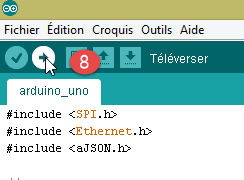
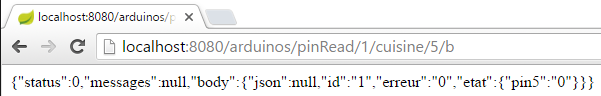
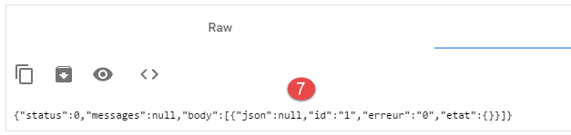
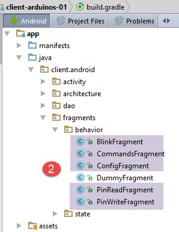

5. TP ۲ – کنترل آردوینوها با تبلت اندروید
اکنون یاد میگیریم چگونه یک برد آردوینو را با استفاده از یک تبلت کنترل کنیم. مثال پیش رو مربوط به پروژه [client-android-skel] از دوره است (به پاراگراف ۲ مراجعه کنید).
5.1. معماری پروژه
کل پروژه معماری زیر را خواهد داشت:
 |
- ماژول [1]، شامل وبسرور (jSON) و آردوینوها، در اختیار شما قرار خواهد گرفت؛
- شما باید ماژول [2] را بسازید و تبلت اندروید را برای ارتباط با وبسرور / jSON برنامهریزی کنید.
5.2. تجهیزات
اجزای زیر در اختیار شما قرار دارند:
- یک آردوینو با شیلد اترنت، یک LED و یک حسگر دما؛
- یک miniHub برای اشتراکگذاری با دانشجوی دیگر؛
- یک کابل USB برای تغذیه آردوینو؛
- دو کابل شبکه برای اتصال آردوینو و PC به یک شبکه خصوصی مشترک؛
- یک تبلت اندروید؛
5.2.1. آردوینو
 |
در اینجا نحوه اتصال اجزای مختلف به یکدیگر آمده است:
- کابل شبکه را از PC خود جدا کنید؛
- PC و آردوینو را با استفاده از یک کابل اترنت به هم متصل کنید؛
- آردوینویی که استفاده خواهید کرد از قبل برنامهنویسی شده است. آدرس آن IP خواهد بود. برای اینکه PC شما آردوینو را شناسایی کند، باید آدرس IP را در شبکه [192.168.2] به آن اختصاص دهید. آردوینوها طوری برنامهریزی شدهاند که با یک PC با آدرس IP [192.168.2.1] ارتباط برقرار کنند. در اینجا نحوه انجام آن آمده است:
به [Panneau de configuration\Réseau et Internet\Centre Réseau et partage] بروید:
 |
- در [1]، روی لینک [réseau local] کلیک کنید؛
- در [2]، روی دکمه [Propriétés] در شبکه محلی کلیک کنید؛
 |  |
- در [3]، روی ویژگیهای [IPv4] نقشه [réseau local] کلیک کنید؛
- در [4]، به این کارت آدرس IP [192.168.2.1] و ماسک زیرشبکه [255.255.255.0] را اختصاص دهید؛
- در [5]، به تعداد لازم روی [OK] کلیک کنید تا از جادوگر خارج شوید.
5.2.2. تبلت
- با استفاده از رمز عبور وایفای خود، رایانه خود را به شبکه وایفای ارائهشده متصل کنید. همین کار را با تبلت خود نیز انجام دهید؛
- آدرس وایفای IP خود را با وارد کردن [ipconfig] در پنجرهی DOS بررسی کنید. شما آدرسی مشابه [192.168.x.y] خواهید یافت؛
dos>ipconfig
Configuration IP de Windows
Carte réseau sans fil Wi-Fi :
Suffixe DNS propre à la connexion. . . :
Adresse IPv6 de liaison locale. . . . .: fe80::39aa:47f6:7537:f8e1%2
Adresse IPv4. . . . . . . . . . . . . .: 192.168.1.25
Masque de sous-réseau. . . . . . . . . : 255.255.255.0
Passerelle par défaut. . . . . . . . . : 192.168.1.1
- آدرس وایفای تبلت خود را بررسی کنید (IP). اگر مطمئن نیستید چگونه این کار را انجام دهید، از سرپرست خود کمک بخواهید. شما آدرسی مشابه [192.168.x.z] پیدا خواهید کرد؛
- اگر فایروال تبلت شما فعال است، آن را غیرفعال کنید؛
- در یک پنجره Command Prompt، با تایپ کردن دستور [ping 192.168.x.z]، بررسی کنید که PC و تبلت میتوانند با هم ارتباط برقرار کنند، که در آن [192.168.x.z] آدرس تبلت شما IP است. تبلت باید سپس پاسخ دهد:
dos>ping 192.168.1.26
Envoi d'une requête 'Ping' 192.168.1.26 avec 32 octets de données :
Réponse de 192.168.1.26 : octets=32 temps=102 ms TTL=64
Réponse de 192.168.1.26 : octets=32 temps=134 ms TTL=64
Réponse de 192.168.1.26 : octets=32 temps=168 ms TTL=64
Réponse de 192.168.1.26 : octets=32 temps=208 ms TTL=64
Statistiques Ping pour 192.168.1.26:
Paquets : envoyés = 4, reçus = 4, perdus = 0 (perte 0%),
Durée approximative des boucles en millisecondes :
Minimum = 102ms, Maximum = 208ms, Moyenne = 153ms
پیکربندی شبکه سیستم شما اکنون کامل شده است.
5.2.3. شبیهساز [Genymotion]
شبیهساز [Genymotion] (به بخش 6.9 مراجعه کنید) جایگزین بهتری برای تبلت است. این شبیهساز تقریباً به همان سرعت است و نیازی به شبکه وایفای ندارد. این روشی است که ما استفاده از آن را توصیه میکنیم. شما میتوانید از تبلت برای آزمایش نهایی اپلیکیشن خود استفاده کنید.
5.3. برنامهنویسی آردوینوها
در اینجا بر نوشتن کد C برای آردوینوها تمرکز میکنیم:
 |
همچنین ببینید
- نصب محیط توسعه آردوینو (به بخش ۶.۱ مراجعه کنید)؛
- استفاده از کتابخانههای jSON (پیوستها، بخش 6.6)؛
- در محیط آردوینو IDE، مثال یک سرور TCP (مانند سرور وب) و یک کلاینت TCP (مانند کلاینت Telnet) را آزمایش کنید؛
- ضمیمههای مربوط به محیط برنامهنویسی آردوینو در بخش 6.1.
 |
آردوینو مجموعهای از پینها است که به سختافزار متصل شدهاند. این پینها یا ورودی هستند یا خروجی. مقادیر آنها یا دودویی هستند یا آنالوگ. برای کنترل آردوینو، دو عملیات پایه وجود دارد:
- نوشتن یک مقدار دودویی یا آنالوگ به یک پین که با شمارهٔ آن مشخص شده است؛
- خواندن یک مقدار دودویی یا آنالوگ از پینی که با شمارهاش شناسایی شده است؛
به این دو عملیات پایه، عملیات سومی را اضافه خواهیم کرد:
- روشن و خاموش کردن یک LED به مدت زمان و با فرکانس مشخص. این عملیات را میتوان با فراخوانی مکرر دو عملیات پایهای قبلی انجام داد. با این حال، در حین آزمایش خواهیم دید که تبادل دادهها بین لایه [DAO] و آردوینو در بازه زمانی یک ثانیه انجام میشود. بنابراین، به عنوان مثال، امکان چشمک زدن یک LED هر ۱۰۰ میلیثانیه وجود ندارد. بنابراین، ما این عملکرد چشمکزدن را روی خود آردوینو پیادهسازی خواهیم کرد.
آردوینو به شرح زیر عمل خواهد کرد:
- ارتباط بین لایه [DAO] و آردوینو از طریق یک شبکه TCP-IP و از طریق تبادل خطوط متنی در قالب jSON (نمایش شیء JavaScript) انجام میشود؛
- در هنگام راهاندازی، آردوینو به پورت ۱۰۰ یک سرور ثبتنام در لایه [DAO] متصل میشود. آن یک خط متن به سرور ارسال میکند:
این یک رشته jSON است که آردوینوی در حال اتصال را شناسایی میکند:
- id: شناسه آردوینو؛
- desc: توضیحی از قابلیتهای آردوینو. در اینجا، ما صرفاً نوع آردوینو را مشخص کردهایم؛
- mac: آدرس MAC آردوینو؛
- port: شماره پورتی که آردوینو برای دریافت دستورات از لایه [DAO] به آن گوش میدهد.
تمام این اطلاعات به صورت رشتههای متنی هستند، به جز پورت که یک عدد صحیح است.
- پس از اینکه آردوینو در سرور ثبتنام کرد، شروع به گوش دادن به پورتی میکند که به سرور مشخص کرده است (۱۰۲ در بالا). آن منتظر دستورات jSON در قالب زیر است:
این یک رشته jSON است که شامل عناصر زیر میباشد:
- id: شناسهٔ فرمان. میتواند هر چیزی باشد؛
- ac: یک اقدام. سه نوع وجود دارد:
- pw (نوشتن پین) برای نوشتن یک مقدار در یک پین،
- pr (pin read) برای خواندن مقدار یک پین،
- cl (فلش) برای چشمکزده کردن یک LED؛
- pa: پارامترهای عمل. اینها به عمل بستگی دارند.
- آردوینو همیشه پاسخی را به کلاینت خود بازمیگرداند. این یک رشته jSON در قالب زیر است:
که در آن
- id: شناسهی دستوری که پاسخ داده میشود؛
- er (خطا): یک کد خطا در صورت وقوع خطا، در غیر این صورت 0؛
- و (status): یک دیکشنری که همیشه خالی است به جز برای فرمان خواندن 'pr'. در این صورت، دیکشنری حاوی مقدار پین شماره x است.
در اینجا چند مثال برای روشنتر کردن مشخصات فوق آورده شده است:
LED شمارهٔ ۸ را ۱۰ بار با فاصلهٔ ۱۰۰ میلیثانیه چشمکزن کنید:
فرمان | |
پاسخ |
پارامترهای دستور cl عبارتند از: مدت زمان dur فلاش به میلیثانیه، تعداد nb فلاشها و شماره پین LED.
مقدار باینری ۱ را به پین ۷ بنویسید:
دستور | |
پاسخ |
پارامترهای دستور pw عبارتند از: حالت نوشتن b (دودویی) یا a (آنالوگ)، مقدار val برای نوشتن، و شماره پین. برای نوشتن دودویی، val برابر 0 یا 1 است. برای نوشتن آنالوگ، val در محدوده [0,255] قرار دارد.
مقدار آنالوگ ۱۲۰ را به پین شماره ۲ بنویسید:
فرمان | |
پاسخ |
مقدار آنالوگ را از پین ۰ بخوانید:
فرمان | |
پاسخ |
پارامترهای فرمان pr عبارتند از: حالت خواندن (b برای باینری یا a برای آنالوگ) و شماره پین. در صورت عدم وجود خطا، آردوینو مقدار پین درخواستشده را در فرهنگ لغت 'et' پاسخ خود قرار میدهد. در اینجا، pin0 نشان میدهد که مقدار پین شماره 0 درخواست شده است و 1023 آن مقدار است. هنگام خواندن، یک مقدار آنالوگ در بازه [0, 1024] قرار خواهد گرفت.
ما سه فرمان cl، pw و pr را معرفی کردهایم. ممکن است این سؤال پیش بیاید که چرا در رشتههای jSON از فیلدهای صریحتری مانند «action» به جای «ac»، «pinwrite» به جای «pw»، «parameters» به جای «pa» و غیره استفاده نکردیم. آردوینو حافظه بسیار محدودی دارد. با این حال، رشتههای jSON که با آردوینو مبادله میشوند، در مصرف حافظه مؤثر هستند. بنابراین ما تصمیم گرفتیم آنها را تا حد امکان کوتاه کنیم.
حال به چند مثال از خطاها نگاه میکنیم:
فرمان | |
پاسخ |
فرمانی ارسال شد که در قالب jSON نیست. آردوینو کد خطای 100 را بازگرداند.
فرمان | |
پاسخ |
یک فرمان pr بدون پارامتر pin ارسال شد. آردوینو کد خطای 302 را بازگرداند.
فرمان | |
پاسخ |
ما یک دستور pinread ناشناس (که pr است) ارسال کردیم. آردوینو کد خطای 104 را بازگرداند.
ما با مثالها ادامه نخواهیم داد. قانون ساده است. آردوینو نباید از کار بیفتد، صرفنظر از دستوری که برای آن ارسال میشود. قبل از اجرای یک دستور jSON، بررسی میکند که دستور صحیح است. به محض اینکه خطایی رخ دهد، آردوینو اجرای دستور را متوقف کرده و رشته خطای jSON را به کلاینت خود بازمیگرداند. مجدداً، از آنجایی که فضای حافظه محدود است، به جای یک پیام کامل، یک کد خطا بازگردانده میشود.
کد برنامه که روی آردوینو اجرا میشود، در مثالهای این سند ارائه شده است:
 |
برای انتقال آن به آردوینو:
- آن را به PC خود متصل کنید؛
 |  |
- در [1]، فایل [arduino_uno.ino] را باز کنید. آردوینو IDE راهاندازی شده و فایل را بارگذاری خواهد کرد؛
توجه: این کد در اصل با IDE ARDUINO 1.5.x ایجاد و آزمایش شده است. از آن زمان، نسخههای دیگری از IDE منتشر شدهاند. این کد با IDE ARDUINO 1.6.x کار نکرد. به نظر میرسد بین نسخههای 1.6 و 1.5 مشکل سازگاری رو به عقب وجود دارد.
- در [2-4]، نوع آردوینوی مورد استفاده را مشخص کنید؛
 |  |
- در [5-7]، مشخص کنید که به کدام پورت سریال روی PC متصل است؛
- در [8]، برنامه [arduino_uno] را به آردوینو بارگذاری کنید؛
کد برنامه به طور گسترده با توضیحات همراه است. خوانندگان علاقهمند میتوانند به آن مراجعه کنند. ما صرفاً خطوط کدی را که امکان پیکربندی ارتباط دوطرفه کلاینت/سرور بین آردوینو و PC را فراهم میکنند، برجسته میکنیم:
#include <SPI.h>
#include <Ethernet.h>
#include <ajSON.h>
// ---------------------------------- CONFIGURATION DE ARDUINO UNO
// آدرس آردوینو MAC UNO
byte macArduino[] = {
0x90, 0xA2, 0xDA, 0x0D, 0xEE, 0xC7 };
char * strMacArduino="90:A2:DA:0D:EE:C7";
// آدرس آردوینو IP
IPAddress ipArduino(192,168,2,2);
// شناسهی آن
char * idArduino="cuisine";
// پورت سرور آردوینو
int portArduino=102;
// توضیحات آردوینو
char * descriptionArduino="contrôle domotique";
// سرور آردوینو روی پورت 102 اجرا خواهد شد
EthernetServer server(portArduino);
// IP مربوط به سرور ثبت گزارش
IPAddress ipServeurEnregistrement(192,168,2,1);
// پورت سرور ثبت گزارش
int portServeurEnregistrement=100;
// کلاینت آردوینو برای سرور ثبتنام
EthernetClient clientArduino;
// دستور کلاینت
char commande[100];
// پاسخ آردوینو
char message[100];
// ابتداییسازی
void setup() {
// پایشگر سریال به شما امکان میدهد ارتباط را دنبال کنید
Serial.begin(9600);
// برقراری اتصال اترنت
Ethernet.begin(macArduino,ipArduino);
// حافظه در دسترس
Serial.print(F("Memoire disponible : "));
Serial.println(freeRam());
}
//حلقه بینهایت
void loop()
{
...
}
- خط ۸: آدرس MAC آردوینو. این موضوع در اینجا چندان مهم نیست، زیرا آردوینو در یک شبکه خصوصی قرار خواهد داشت که شامل یک PC و یک یا چند آردوینو است. آدرس MAC کافی است که در این شبکه خصوصی منحصر به فرد باشد. معمولاً کارت شبکه آردوینو برچسبی دارد که آدرس MAC کارت را نشان میدهد. اگر این برچسب وجود نداشته باشد و شما آدرس MAC کارت را ندانید، میتوانید هر عددی را که دوست دارید در خط ۸ وارد کنید، به شرطی که قاعده الزام به منحصر به فرد بودن آدرس MAC در شبکه خصوصی رعایت شود؛
- خط ۱۱: آدرس کارت IP. مجدداً، میتوانید هر عددی از شکل [192.168.2.x] را وارد کنید و مقدار x را برای آردوینوهای مختلف در شبکه خصوصی متفاوت در نظر بگیرید؛
- خط ۱۳: شناسهی آردوینو. این شناسه باید در میان شناسههای آردوینوهای موجود در همان شبکهی خصوصی منحصر به فرد باشد؛
- خط ۱۵: پورت سرویس آردوینو. میتوانید هر مقداری که دوست دارید وارد کنید؛
- خط ۱۷: توضیح عملکرد آردوینو. میتوانید هر چیزی که میخواهید وارد کنید. به دلیل حافظه محدود آردوینو، در مورد رشتههای طولانی مراقب باشید؛
- خط ۲۱: آدرس IP سرور ثبتنام آردوینو در PC. نباید تغییر داده شود؛
- خط ۲۳: پورت برای این سرویس ثبت وقایع. نباید تغییر داده شود؛
5.4. سرور وب / jSON
5.4.1. نصب

بینیری جاوا برای وبسرور / jSON به شرح زیر ارائه میشود:
 |
یک پنجرهٔ فرمان را باز کنید و دستور زیر را تایپ کنید:
اگر [java.exe] در پنجره فرمان PATH ظاهر نشد، باید مسیر کامل [java.exe] (معمولاً C:\Program Files\java\...) را وارد کنید.
یک پنجره DOS باز شده و لاگها را نمایش میدهد:
. ____ _ __ _ _
/\\ / ___'_ __ _ _(_)_ __ __ _ \ \ \ \
( ( )\___ | '_ | '_| | '_ \/ _` | \ \ \ \
\\/ ___)| |_)| | | | | || (_| | ) ) ) )
' |____| .__|_| |_|_| |_\__, | / / / /
=========|_|==============|___/=/_/_/_/
:: Spring Boot :: (v0.5.0.M6)
2014-01-06 11:11:35.550 INFO 8408 --- [ main] arduino.rest.metier.Application : Starting Application on Gportpers3 with PID 8408 (C:\Users\SergeTahÚ\Desktop\part2\server.jar started by ST)
2014-01-06 11:11:35.587 INFO 8408 --- [ main] ationConfigEmbeddedWebApplicationContext : Refreshing org.springframework.boot.context.embedded.AnnotationConfigEmbeddedWebApplicationContext@6a4ba620: startup date [Mon Jan 06 11:11:35 CET 2014]; root of context hierarchy
2014-01-06 11:11:36.765 INFO 8408 --- [ main] o.apache.catalina.core.StandardService : Starting service Tomcat
2014-01-06 11:11:36.766 INFO 8408 --- [ main] org.apache.catalina.core.StandardEngine : Starting Servlet Engine: Apache Tomcat/7.0.42
2014-01-06 11:11:36.876 INFO 8408 --- [ost-startStop-1] o.a.c.c.C.[Tomcat].[localhost].[/] : Initializing Spring embedded WebApplicationContext
2014-01-06 11:11:36.877 INFO 8408 --- [ost-startStop-1] o.s.web.context.ContextLoader : Root WebApplicationContext: initialization completed in 1293 ms
2014-01-06 11:11:37.084 INFO 8408 --- [ost-startStop-1] o.a.c.c.C.[Tomcat].[localhost].[/] : Initializing Spring FrameworkServlet 'dispatcherServlet'
2014-01-06 11:11:37.084 INFO 8408 --- [ost-startStop-1] o.s.web.servlet.DispatcherServlet : FrameworkServlet 'dispatcherServlet': initialization started
2014-01-06 11:11:37.184 INFO 8408 --- [ost-startStop-1] o.s.w.s.handler.SimpleUrlHandlerMapping : Mapped URL path [/**/favicon.ico] onto handler of type [class org.springframework.web.servlet.resource.ResourceHttpRequestHandler]
2014-01-06 11:11:37.386 INFO 8408 --- [ost-startStop-1] s.w.s.m.m.a.RequestMappingHandlerMapping : Mapped "{[/arduinos/blink/{idCommande}/{idArduino}/{pin}/{duree}/{nombre}],methods=[GET],params=[],headers=[],consumes=[],produces=[],custom=[]}" onto public java.lang.String arduino.rest.metier.RestMetier.faireClignoterLed(java.lang.String,java.lang.String,java.lang.String,java.lang.String,java.lang.String,javax.servlet.http.HttpServletResponse)
2014-01-06 11:11:37.388 INFO 8408 --- [ost-startStop-1] s.w.s.m.m.a.RequestMappingHandlerMapping : Mapped "{[/arduinos/commands/{idArduino}],methods=[POST],params=[],headers=[],consumes=[],produces=[],custom=[]}" onto public java.lang.String arduino.rest.metier.RestMetier.sendCommandesJson(java.lang.String,java.lang.String,javax.servlet.http.HttpServletResponse)
2014-01-06 11:11:37.388 INFO 8408 --- [ost-startStop-1] s.w.s.m.m.a.RequestMappingHandlerMapping : Mapped "{[/arduinos/],methods=[GET],params=[],headers=[],consumes=[],produces=[],custom=[]}" onto public java.lang.String arduino.rest.metier.RestMetier.getArduinos(javax.servlet.http.HttpServletResponse)
2014-01-06 11:11:37.389 INFO 8408 --- [ost-startStop-1] s.w.s.m.m.a.RequestMappingHandlerMapping : Mapped "{[/arduinos/pinRead/{idCommande}/{idArduino}/{pin}/{mode}],methods=[GET],params=[],headers=[],consumes=[],produces=[],custom=[]}" onto public java.lang.String arduino.rest.metier.RestMetier.pinRead(java.lang.String,java.lang.String,java.lang.String,java.lang.String,javax.servlet.http.HttpServletResponse)
2014-01-06 11:11:37.390 INFO 8408 --- [ost-startStop-1] s.w.s.m.m.a.RequestMappingHandlerMapping : Mapped "{[/arduinos/pinWrite/{idCommande}/{idArduino}/{pin}/{mode}/{valeur}],methods=[GET],params=[],headers=[],consumes=[],produces=[],custom=[]}" onto public java.lang.String arduino.rest.metier.RestMetier.pinWrite(java.lang.String,java.lang.String,java.lang.String,java.lang.String,java.lang.String,javax.servlet.http.HttpServletResponse)
2014-01-06 11:11:37.463 INFO 8408 --- [ost-startStop-1] o.s.w.s.handler.SimpleUrlHandlerMapping : Mapped URL path [/**] به دستپردازنده از نوع [class org.springframework.web.servlet.resource.ResourceHttpRequestHandler]
2014-01-06 11:11:37.464 INFO 8408 --- [ost-startStop-1] o.s.w.s.handler.SimpleUrlHandlerMapping : Mapped URL path [/webjars/**] onto handler of type [class org.springframework.web.servlet.resource.ResourceHttpRequestHandler]
2014-01-06 11:11:37.881 INFO 8408 --- [ost-startStop-1] o.s.web.servlet.DispatcherServlet : FrameworkServlet 'dispatcherServlet': initialization completed in 796 ms
Serveur d'enregistrement lancÚ sur 192.168.2.1:100
2014-01-06 11:11:38.101 INFO 8408 --- [ Thread-4] arduino.dao.Recorder : Recorder : [11:11:38:101] : [Serveur d'enregistrement : attente d'un client]
2014-01-06 11:11:38.142 INFO 8408 --- [ main] arduino.rest.metier.Application : Started Application in 3.257 seconds
- خط ۱۱: یک سرور Tomcat داخلی راهاندازی میشود؛
- خط ۱۵: سرولت Spring [dispatcherServlet] بارگذاری و اجرا میشود؛
- خط ۱۸: URL Rest [/arduinos/blink/{idCommande}/{idArduino}/{pin}/{duree}/{nombre}] شناسایی شد؛
- خط ۱۹: URL Rest [/arduinos/commands/{idArduino}] شناسایی شد؛
- خط ۲۰: URL Rest [/arduinos/] شناسایی شد؛
- خط ۲۱: URL باقیمانده [/arduinos/pinRead/{idCommande}/{idArduino}/{pin}/{mode}] شناسایی شد؛
- خط ۲۲: URL Rest [/arduinos/pinWrite/{idCommande}/{idArduino}/{pin}/{mode}/{valeur}] شناسایی شد؛
- خط ۲۶: سرور لاگآرِدوینو راهاندازی شد؛
اگر هنوز آردوینوی خود را به PC متصل نکردهاید، این کار را انجام دهید. فایروال روی PC باید غیرفعال باشد. سپس با استفاده از یک مرورگر وب به URL و [http://localhost:8080/arduinos] دسترسی پیدا کنید:
 |
باید شناسه آردوینوی متصلشده را مشاهده کنید. اگر هیچ چیزی نمایش داده نشد، آردوینو را ریست کنید. برای این کار یک دکمه فشاری دارد.
وبسرور / jSON اکنون نصب شده است.
5.4.2. فایلهای URL که توسط سرویس وب / jSON در دسترس قرار گرفتهاند
همچنین ببینید: پروژه [Exemple-15] (به بخش 1.16.1 مراجعه کنید)؛
سرویس وب / jSON با استفاده از Spring MVC پیادهسازی شده و موارد زیر را ارائه میدهد URL:
@Controller
public class WebController {
//لایه کسبوکار
@Autowired
private IMetier métier;
// فهرست آردوینوها
@RequestMapping(value = "/arduinos", method = RequestMethod.GET, produces = MediaType.APPLICATION_JSON_VALUE)
@ResponseBody
public String getArduinos() throws JsonProcessingException {
...
}
//چشمکزن
@RequestMapping(value = "/arduinos/blink/{idCommande}/{idArduino}/{pin}/{duree}/{nombre}", method = RequestMethod.GET, produces = MediaType.APPLICATION_JSON_VALUE)
@ResponseBody
public String faireClignoterLed(@PathVariable("idCommande") String idCommande, @PathVariable("idArduino") String idArduino, @PathVariable("pin") int pin, @PathVariable("duree") int duree, @PathVariable("nombre") int nombre) throws JsonProcessingException {
...
}
//ارسال دستورات JSON
@RequestMapping(value = "/arduinos/commands/{idArduino}", method = RequestMethod.POST, produces = MediaType.APPLICATION_JSON_VALUE, consumes = MediaType.APPLICATION_JSON_VALUE)
@ResponseBody
public String sendCommandesJson(@PathVariable("idArduino") String idArduino, HttpServletRequest request) throws IOException {
...
}
// خواندن پین
@RequestMapping(value = "/arduinos/pinRead/{idCommande}/{idArduino}/{pin}/{mode}", method = RequestMethod.GET, produces = MediaType.APPLICATION_JSON_VALUE)
@ResponseBody
public String pinRead(@PathVariable("idCommande") String idCommande, @PathVariable("idArduino") String idArduino, @PathVariable("pin") int pin, @PathVariable("mode") String mode) throws JsonProcessingException {
....
}
// نوشتن در یک پین
@RequestMapping(value = "/arduinos/pinWrite/{idCommande}/{idArduino}/{pin}/{mode}/{valeur}", method = RequestMethod.GET, produces = MediaType.APPLICATION_JSON_VALUE)
@ResponseBody
public String pinWrite(@PathVariable("idCommande") String idCommande, @PathVariable("idArduino") String idArduino, @PathVariable("pin") int pin, @PathVariable("mode") String mode, @PathVariable("valeur") int valeur) throws JsonProcessingException {
...
}
}
پاسخهای ارسالشده توسط سرور، نمایشهای jSON از کلاس زیر [Response<T>] هستند:
package client.android.dao.service;
import java.util.List;
public class Response<T> {
// ----------------- ویژگیها
//وضعیت عملیات
private int status;
// هر پیام وضعیت
private List<String> messages;
// بدنه پاسخ
private T body;
// سازندهها
public Response() {
}
public Response(int status, List<String> messages, T body) {
this.status = status;
this.messages = messages;
this.body = body;
}
// گیرندهها و تنظیمکنندهها
...
}
URL [/arduinos] پاسخی از نوع [Response<List<Arduino>>] ارسال میکند، که در آن [Arduino] کلاس زیر است:
package android.arduinos.entities;
import java.io.Serializable;
public class Arduino implements Serializable {
// دادهها
private String id;
private String description;
private String mac;
private String ip;
private int port;
// گیرنده و تنظیمکننده
...
}
- خط ۷: [id] شناسهی آردوینو است؛
- خط ۸: توضیحات آن؛
- خط ۹: آدرس آن MAC;
- خط ۱۰: آدرس آن IP;
- خط ۱۱: پورتی که روی آن منتظر دستورات است؛
URL:
- [/arduinos/blink/{idCommande}/{idArduino}/{pin}/{duree}/{nombre}];
- [/arduinos/pinRead/{idCommande}/{idArduino}/{pin}/{mode}];
- [/arduinos/pinWrite/{idCommande}/{idArduino}/{pin}/{mode}/{valeur}];
- [/arduinos/commands/{idArduino}];
پاسخی از نوع [Response<ArduinoResponse>] ارسال کنید، که در آن کلاس [ArduinoResponse] نمایانگر پاسخ استاندارد آردوینو است:
public class ArduinoResponse implements Serializable {
private String json;
private String id;
private String erreur;
private Map<String, Object> etat;
// گیرندهها و تنظیمکنندهها
...
}
- [json]: رشتهای که توسط آردوینویی ارسال میشود که نمیتوان آن را رمزگشایی کرد (در صورت خطا)، در غیر این صورت null؛
- [id]: شناسه دستوری است که آردوینو به آن پاسخ میدهد؛
- [erreur]: یک کد خطا، در صورت OK برابر با 0 و در غیر این صورت مقداری متفاوت؛
- [etat]: یک دیکشنری حاوی پاسخ خاص به فرمان. این دیکشنری معمولاً خالی است، مگر اینکه فرمان درخواست خواندن یک مقدار از آردوینو را کرده باشد، که در این صورت آن مقدار در این دیکشنری قرار داده میشود؛
5.4.3. تستهای سرویس وب / jSON
با انجام تست درخواستهای زیر URL، با وبسرور / jSON آشنا شوید:
در اینجا چند تصویر از آنچه باید ببینید آورده شده است:
بازیابی لیست آردوینوهای متصل:
 |
رشته دریافتی از سرور وب / jSON یک شیء با فیلدهای زیر است:
- [status]: مقدار 0 نشاندهنده عدم وقوع خطا است – در غیر این صورت، خطایی رخ داده است؛
- [messages]: فهرستی از پیامها برای توضیح خطا در صورت وقوع خطا:
- [body]: فهرست آردوینوها در صورتی که خطایی رخ نداده باشد. هر آردوینو سپس با یک شیء با فیلدهای زیر توصیف میشود:
- [id]: شناسهی آردوینو. هیچ دو آردوینویی نمیتوانند شناسهی یکسانی داشته باشند؛
- [description]: شرح مختصری از عملکرد آردوینو؛
- [mac]: آدرس MAC آردوینو؛
- [ip]: آدرس IP آردوینو؛
- [port]: پورتی که برای دریافت دستورات گوش میدهد؛
LED روی پایه ۸ آردوینو با شناسه [cuisine] را طوری تنظیم کنید که هر ۱۰۰ میلیثانیه ۲۰ بار چشمک بزند:
 |
رشته jSON دریافتشده از سرور وب / jSON یک شیء با فیلدهای زیر است:
- [status]: مقدار 0 نشاندهنده عدم وقوع خطا است – در غیر این صورت، خطایی رخ داده است؛
- [messages]: فهرستی از پیامها برای توضیح خطا در صورت وقوع خطا:
- [body]: پاسخ آردوینو در صورت عدم وقوع خطا:
- [id]: شناسهی فرمان. این شناسه، عدد ۱ در [/blink/1] است. آردوینو این شناسهی فرمان را در پاسخ خود درج میکند؛
- [erreur]: یک شماره خطا. مقداری غیر از 0 نشاندهنده خطا است؛
- [etat]: فقط هنگام خواندن یک پین استفاده میشود. مقدار آن در این صورت، مقدار آن پین است؛
- [json]: فقط در صورت بروز خطا (jSON) بین کلاینت و سرور استفاده میشود. مقدار آن در این صورت، رشته خطادار jSON است که توسط آردوینو ارسال شده است؛
خوانش آنالوگ از پین شماره ۰ آردوینو، شناساییشده توسط [cuisine]:
 |
رشته دریافتی از سرور وب / jSON مشابه مورد قبلی است، با این تفاوت که فیلد [etat]، که نشاندهنده مقدار پین 0 است، متفاوت است.
خوانش دودویی از پین شمارهٔ ۵ آردوینو که توسط [cuisine] شناسایی شده است:
 |
رشته jSON دریافتشده از سرور وب / jSON مشابه مورد قبلی است.
نوشتن دودویی مقدار 1 به پین 8 آردوینو با شناسه [cuisine]:
 |
رشته jSON دریافتشده از سرور وب / jSON مشابه مورد قبلی است.
آزمایش URL و [http://localhost:8080/arduinos/commands/cuisine] پیچیدهتر است. روش روی وبسرور / jSON که این URL را پردازش میکند، منتظر یک درخواست POST است که بهسادگی با استفاده از مرورگر قابل شبیهسازی نیست. برای آزمایش این URL، میتوانید از مرورگر کروم با افزونه [Advanced REST Client] استفاده کنید (به بخش 6.13 مراجعه کنید):
 |
- در [1]، URL روش وب / jSON که باید آزمایش شود؛
- به [2]، روش POST برای ارسال درخواست؛
- در [3-4]، مقدار ارسالشده از jSON است؛
- در [5]، رشته jSON ارسال میشود. لطفاً به کروشههای مربعشکل در ابتدای و انتهای لیست توجه کنید. در اینجا، این لیست تنها شامل یک فرمان، jSON، است که باعث چشمک زدن پین شماره ۸ به مدت ۱۰ بار در هر ۱۰۰ میلیثانیه میشود؛
- در [6]، درخواست ارسال میشود؛
 |
- در [7]، پاسخ jSON که توسط سرور ارسال شده است. این شیء یک شیء دریافت کرده است که شامل دو فیلد معمول [status, messages] و یک فیلد [body] است که مقدار آن فهرست پاسخهای آردوینو به هر یک از دستورات jSON ارسالشده میباشد.
بیایید ببینیم وقتی یک فرمان jSON را که از نظر دستوری برای آردوینو نادرست است ارسال میکنیم چه اتفاقی میافتد:
 |
سپس پاسخ زیر را دریافت میکنیم:
 |
میتوانیم ببینیم که در پاسخ آردوینو، شماره خطا [104] است که نشان میدهد فرمان [xx] شناسایی نشده است.
5.5. تستهای کلاینت اندروید
 |
بینیری اجرایی نهایی برای کلاینت اندروید در زیر ارائه شده است:
|
با استفاده از ماوس، فایل باینری [app-debug.apk] را که در بالا نشان داده شده است، روی شبیهساز تبلت [GenyMotion] بکشید و رها کنید. سپس فایل ذخیره شده و اجرا خواهد شد. همچنین اگر قبلاً این کار را انجام ندادهاید، وب سرور / jSON را راهاندازی کنید. آردوینو را به PC که یک LED روی آن قرار دارد، متصل کنید. کلاینت اندروید به شما امکان میدهد آردوینوها را از راه دور مدیریت کنید. این برنامه صفحات زیر را برای کاربر نمایش میدهد.
زبانهی [CONFIG] به شما امکان میدهد به سرور متصل شوید و فهرست آردوینوهای متصل را بازیابی کنید:

- در [1]، آدرس IP [192.168.2.1] را که به PC شما اختصاص داده شده است وارد کنید (به بخش 5.2 مراجعه کنید).
زبانهی [PINWRITE] به شما امکان میدهد یک مقدار را به یک پین آردوینو بنویسید:


زبانهی [PINREAD] به شما امکان میدهد مقدار را از یک پین آردوینو بخوانید:

زبانهی [BLINK] به شما امکان میدهد تا یک LED آردوینو را چشمکزن کنید:

زبانهی [COMMAND] به شما امکان میدهد یک فرمان jSON را به آردوینو ارسال کنید:

5.6. کلاینت اندروید برای سرویس وب / jSON
اکنون به نوشتن کلاینت اندروید میپردازیم.
5.6.1. معماری کلاینت
معماری کلاینت اندروید همان معماری پروژه [Exemple-15] خواهد بود (به بخش 1.16.2 مراجعه کنید)؛
 |
- لایه [DAO] با وب سرور / jSON ارتباط برقرار میکند؛
کلاینت اندروید باید بتواند چندین آردوینو را بهطور همزمان کنترل کند. برای مثال، ما میخواهیم بتوانیم دو LED روی دو آردوینو را همزمان چشمکزن کنیم، نه یکی پس از دیگری. بنابراین، کلاینت اندروید ما از یک وظیفه ناهمزمان برای هر آردوینو استفاده خواهد کرد و این وظایف بهصورت موازی اجرا میشوند.
5.6.2. پروژه اندروید استودیوی کلاینت
پروژه [client-android-skel] را (به بند 2 مراجعه کنید) در پروژه [client-arduinos-01] کپی کنید (در صورت لزوم برای دستورالعملهای کپی کردن یک پروژه Gradle به بند 1.15 مراجعه کنید):

5.6.3. پنج نما XML
 |
پنج نمای XML وجود خواهد داشت:
- [blink]: برای چشمک زدن یک LED آردوینو. این با قطعه [BlinkFragment] مرتبط است؛
- [commands]: برای ارسال یک فرمان jSON به آردوینو. این با قطعه [CommandsFragment] مرتبط است؛
- [config]: برای پیکربندی سرویس وب URL / jSON و بازیابی لیست اولیه آردوینوهای متصل. این با قطعه [ConfigFragment] مرتبط است؛
- [pinread]: برای خواندن مقدار دودویی یا آنالوگ از یک پین آردوینو. این با قطعه [PinReadFragment] مرتبط است؛
- [pinwrite]: برای نوشتن یک مقدار دودویی یا آنالوگ به یک پین آردوینو. این با قطعه [PinWriteFragment] مرتبط است؛
فعلاً، این پنج نما XML همگی دارای محتوای خالی یکسان خواهند بود:
<?xml version="1.0" encoding="utf-8"?>
<ScrollView xmlns:android="http://schemas.android.com/apk/res/android"
android:id="@+id/scrollView1"
android:layout_width="wrap_content"
android:layout_height="wrap_content">
<RelativeLayout xmlns:android="http://schemas.android.com/apk/res/android"
android:layout_width="match_parent"
android:layout_height="match_parent">
</RelativeLayout>
</ScrollView>
- این نما در یک کانتینر [RelativeLayout] (خطوط ۷–۱۰) قرار دارد که خود در یک کانتینر [ScrollView] (خطوط ۲–۱۱) جای گرفته است. این کار تضمین میکند که اگر نما از اندازه صفحه نمایش تبلت بزرگتر باشد، بتوانیم آن را پیمایش (اسکرول) کنیم؛
وظیفه: ایجاد پنج نما XML.
5.6.4. منوی قطعه
ما میدانیم که قطعات در پروژهای که با [client-android-skel] ساخته شده است، باید به یک منو مرتبط باشند، حتی اگر خالی باشد. در این صورت، برنامه منویی نخواهد داشت. منوی خالی از قبل در پروژه گنجانده شده است؛
 |
5.6.5. پنج قطعهٔ برنامه
 |  |
وظیفه: قطعه [DummyFragment] را در پنج قطعهٔ برنامه کپی کنید، همانطور که در [2] نشان داده شده است.
قطعه [ConfigFragment] ساختار زیر را دارد:
package client.android.fragments.behavior;
import client.android.R;
import client.android.architecture.core.AbstractFragment;
import client.android.architecture.custom.CoreState;
import client.android.fragments.state.DummyFragmentState;
import org.androidannotations.annotations.EFragment;
import org.androidannotations.annotations.OptionsMenu;
@EFragment
@OptionsMenu(R.menu.menu_vide)
public class ConfigFragment extends AbstractFragment {
//فیلدهایی که از کلاس والد به ارث رسیدهاند -------------------------------------------------------
...
خط ۱۰ را با خط زیر جایگزین کنید:
@EFragment(R.layout.config)
مأموریت: همین کار را برای چهار قطعه دیگر با تطبیق ویژگی [@EFragment] کلاس انجام دهید.
قطعه | نما |
ConfigFragment | |
PinReadFragment | |
PinWriteFragment | |
CommandsFragment | |
BlinkFragment | |
5.6.6. وضعیتهای قطعه
 |  |
هر قطعه یک وضعیت خواهد داشت.
وظیفه: کلاس [DummyFragmentState] را پنج بار کپی کنید تا پنج وضعیت نمایشدادهشده در [2] ایجاد شود.
5.6.7. سفارشیسازی پروژه
 |
بسته [architecture / custom] شامل عناصر قابل سفارشیسازی معماری برنامه است.
5.6.7.1. رابط [IMainActivity]
رابط [IMainActivity] مشخص میکند که قطعات چه درخواستهایی میتوانند از فعالیت داشته باشند و همچنین ثابتهای برنامه را تعریف میکند. این رابط به شرح زیر خواهد بود:
package client.android.architecture.custom;
import client.android.architecture.core.ISession;
import client.android.dao.service.IDao;
public interface IMainActivity extends IDao {
//دسترسی به جلسه
ISession getSession();
// تغییر نما
void navigateToView(int position, ISession.Action action);
// مدیریت صف
void beginWaiting();
void cancelWaiting();
// ثوابت برنامه -------------------------------------
// حالت اشکالزدایی
boolean IS_DEBUG_ENABLED = true;
//حداکثر زمان انتظار برای پاسخ سرور
int TIMEOUT = 1000;
// زمان انتظار قبل از اجرای درخواست کلاینت
int DELAY = 000;
// احراز هویت پایه
boolean IS_BASIC_AUTHENTIFICATION_NEEDED = false;
// همجواری قطعه
int OFF_SCREEN_PAGE_LIMIT = 1;
//نوار زبانه
boolean ARE_TABS_NEEDED = true;
// بارگذاری تصویر
boolean IS_WAITING_ICON_NEEDED = true;
// تعداد قطعات
int FRAGMENTS_COUNT = 5;
// تعداد بازدیدها
int VUE_CONFIG = 0;
int VUE_BLINK = 1;
int VUE_PINREAD = 2;
int VUE_PINWRITE = 3;
int VUE_COMMANDS = 4;
}
- خطوط ۲۵، ۲۸، ۳۱، ۴۰: پیکربندی لایه [DAO]. این برنامه از یک وب سرور / jSON پرسوجو میکند؛
- خط ۳۷: این برنامه دارای برگهها است؛
- خط ۴۳: این برنامه دارای پنج قطعه است؛
- خطوط ۴۶–۵۰: شمارههای پنج قطعه؛
- خط ۳۴: مجاورت قطعات. توسعهدهنده میتواند در اینجا مقداری را در بازه [1, FRAGMENTS_COUNT-1] وارد کند؛
5.6.7.2. کلاس [CoreState]
کلاس [CoreState] کلاس والد وضعیتهای قطعه است:
package client.android.architecture.custom;
import client.android.architecture.core.MenuItemState;
import client.android.fragments.state.*;
import com.fasterxml.jackson.annotation.JsonIgnoreProperties;
import com.fasterxml.jackson.annotation.JsonSubTypes;
import com.fasterxml.jackson.annotation.JsonTypeInfo;
@JsonIgnoreProperties(ignoreUnknown = true)
@JsonTypeInfo(use = JsonTypeInfo.Id.NAME, include = JsonTypeInfo.As.PROPERTY)
@JsonSubTypes({
@JsonSubTypes.Type(value = ConfigFragmentState.class),
@JsonSubTypes.Type(value = BlinkFragmentState.class),
@JsonSubTypes.Type(value = PinReadFragmentState.class),
@JsonSubTypes.Type(value = PinWriteFragmentState.class),
@JsonSubTypes.Type(value = CommandsFragmentState.class)}
)
public class CoreState {
// اینکه آیا قطعه بازدید شده است یا خیر
protected boolean hasBeenVisited = false;
//وضعیت منوی قطعه (در صورت وجود)
protected MenuItemState[] menuOptionsState;
// گیرنده و تنظیمکننده
...
}
- خطوط ۱۲–۱۶: کلاسهای وضعیت برای پنج قطعه باید در اینجا اعلام شوند؛
5.6.8. کلاس [MainActivity]
 |
کلاس [MainActivity] به شرح زیر خواهد بود:
package client.android.activity;
import android.support.design.widget.TabLayout;
import android.util.Log;
import client.android.R;
import client.android.architecture.core.AbstractActivity;
import client.android.architecture.core.AbstractFragment;
import client.android.architecture.core.ISession;
import client.android.architecture.custom.IMainActivity;
import client.android.architecture.custom.Session;
import client.android.dao.entities.Arduino;
import client.android.dao.entities.ArduinoCommand;
import client.android.dao.entities.ArduinoResponse;
import client.android.dao.service.Dao;
import client.android.dao.service.IDao;
import client.android.dao.service.Response;
import client.android.fragments.behavior.*;
import org.androidannotations.annotations.Bean;
import org.androidannotations.annotations.EActivity;
import org.androidannotations.annotations.OptionsMenu;
import rx.Observable;
import java.util.List;
import java.util.Locale;
@EActivity
@OptionsMenu(R.menu.menu_main)
public class MainActivity extends AbstractActivity {
//لایه [DAO]
@Bean(Dao.class)
protected IDao dao;
// جلسه
private Session session;
// متدهای کلاس والد -----------------------
@Override
protected void onCreateActivity() {
// لاگ
if (IS_DEBUG_ENABLED) {
Log.d(className, "onCreateActivity");
}
// جلسه
this.session = (Session) super.session;
// ایجاد پنج زبانه
for (int i = 0; i < 5; i++) {
TabLayout.Tab newTab = tabLayout.newTab();
newTab.setText(getFragmentTitle(i));
tabLayout.addTab(newTab);
}
}
@Override
protected IDao getDao() {
return dao;
}
@Override
protected AbstractFragment[] getFragments() {
return new AbstractFragment[]{new ConfigFragment_(), new BlinkFragment_(), new PinReadFragment_(), new PinWriteFragment_(), new CommandsFragment_()};
}
@Override
protected CharSequence getFragmentTitle(int position) {
Locale l = Locale.getDefault();
switch (position) {
case 0:
return getString(R.string.config_titre).toUpperCase(l);
case 1:
return getString(R.string.blink_titre).toUpperCase(l);
case 2:
return getString(R.string.pinread_titre).toUpperCase(l);
case 3:
return getString(R.string.pinwrite_titre).toUpperCase(l);
case 4:
return getString(R.string.commands_titre).toUpperCase(l);
}
return null;
}
@Override
protected void navigateOnTabSelected(int position) {
// نمایش موقعیت قطعه شماره
navigateToView(position, ISession.Action.NAVIGATION);
}
@Override
protected int getFirstView() {
return IMainActivity.VUE_CONFIG;
}
// پیادهسازی IDao -----------------------------------------
}
- خطوط ۴۶–۵۰: ایجاد پنج زبانهٔ برنامه؛
- خط ۴۸: عناوین تبها توسط متدی در خطوط ۶۳–۷۹ ارائه میشوند؛
- پنج قطعه در خط ۶۰ نمونه سازی میشوند. به دلیل حاشیهنویسیهای AA، کلاسهای قطعه همانهایی هستند که قبلاً ارائه شدهاند و با یک زیرخط (_) به انتهای نامشان افزوده شده است؛
- خطوط ۶۳–۷۹: یک عنوان برای هر یک از قطعات تعریف میشود. این عناوین از فایل [res / values / strings.xml] بازیابی خواهند شد
 |
محتویات [strings.xml] به شرح زیر است:
<?xml version="1.0" encoding="utf-8"?>
<resources>
<!-- نام برنامه -->
<string name="app_name">[arduinos-client-01]</string>
<!-- قطعات و برگهها -->
<string name="config_titre">[Config]</string>
<string name="blink_titre">[Blink]</string>
<string name="pinread_titre">[PinRead]</string>
<string name="pinwrite_titre">[PinWrite]</string>
<string name="commands_titre">[Commands]</string>
</resources>
وظیفه: عناصر فهرستشده در بالا را ایجاد کرده و پروژه را کامپایل کنید. نباید هیچ خطایی وجود داشته باشد.
پروژه را اجرا کنید. باید نمای زیر را در شبیهساز مشاهده کنید:

لاگهای همراه با نمایش اولین نما را بررسی کنید و ترتیب مراحل مختلف اجرا شده را دنبال کنید. بین برگهها جابجا شوید و به دنبال کردن لاگها ادامه دهید.
5.6.9. نما XML [config]
نمای XML [config] به شرح زیر خواهد بود:
 |  |
نمایان بالا با استفاده از کد زیر تولید میشود: XML:
<?xml version="1.0" encoding="utf-8"?>
<ScrollView xmlns:android="http://schemas.android.com/apk/res/android"
android:id="@+id/scrollView1"
android:layout_width="wrap_content"
android:layout_height="wrap_content">
<RelativeLayout
android:layout_width="match_parent"
android:layout_height="match_parent">
<TextView
android:id="@+id/txt_TitreConfig"
android:layout_width="wrap_content"
android:layout_height="wrap_content"
android:layout_alignParentTop="true"
android:layout_centerHorizontal="true"
android:layout_marginTop="150dp"
android:text="@string/txt_TitreConfig"
android:textSize="@dimen/titre"/>
<TextView
android:id="@+id/txt_UrlServiceRest"
android:layout_width="wrap_content"
android:layout_height="wrap_content"
android:layout_alignParentLeft="true"
android:layout_below="@+id/txt_TitreConfig"
android:layout_marginTop="50dp"
android:text="@string/txt_UrlServiceRest"
android:textSize="20sp"/>
<EditText
android:id="@+id/edt_UrlServiceRest"
android:layout_width="300dp"
android:layout_height="wrap_content"
android:layout_alignBaseline="@+id/txt_UrlServiceRest"
android:layout_alignBottom="@+id/txt_UrlServiceRest"
android:layout_marginLeft="20dp"
android:layout_toRightOf="@+id/txt_UrlServiceRest"
android:ems="10"
android:hint="@string/hint_UrlServiceRest"
android:inputType="textUri">
<requestFocus/>
</EditText>
<TextView
android:id="@+id/txt_MsgErreurIpPort"
android:layout_width="wrap_content"
android:layout_height="wrap_content"
android:layout_alignParentLeft="true"
android:layout_below="@+id/txt_UrlServiceRest"
android:layout_marginTop="20dp"
android:text="@string/txt_MsgErreurUrlServiceRest"
android:textColor="@color/red"
android:textSize="20sp"/>
<TextView
android:id="@+id/txt_arduinos"
android:layout_width="wrap_content"
android:layout_height="wrap_content"
android:layout_alignParentLeft="true"
android:layout_below="@+id/txt_MsgErreurIpPort"
android:layout_marginTop="40dp"
android:text="@string/titre_list_arduinos"
android:textColor="@color/blue"
android:textSize="20sp"/>
<Button
android:id="@+id/btn_Rafraichir"
android:layout_width="wrap_content"
android:layout_height="wrap_content"
android:layout_alignBaseline="@+id/txt_arduinos"
android:layout_alignBottom="@+id/txt_arduinos"
android:layout_marginLeft="20dp"
android:layout_toRightOf="@+id/txt_arduinos"
android:text="@string/btn_rafraichir"/>
<Button
android:id="@+id/btn_Annuler"
android:layout_width="wrap_content"
android:layout_height="wrap_content"
android:layout_alignBaseline="@+id/txt_arduinos"
android:layout_alignBottom="@+id/txt_arduinos"
android:layout_marginLeft="20dp"
android:layout_toRightOf="@+id/txt_arduinos"
android:text="@string/btn_annuler"
android:visibility="invisible"/>
<ListView
android:id="@+id/ListViewArduinos"
android:layout_width="match_parent"
android:layout_height="200dp"
android:layout_alignParentLeft="true"
android:layout_below="@+id/txt_arduinos"
android:layout_marginTop="30dp"
android:background="@color/wheat">
</ListView>
</RelativeLayout>
</ScrollView>
این نما از رشتههای کاراکتری (android:text در خطوط 15، 25، 37، 50، 61، 73) استفاده میکند که در فایل [res / values / strings] تعریف شدهاند:
 |
<?xml version="1.0" encoding="utf-8"?>
<resources>
<string name="app_name">android-domotique</string>
<!-- قطعات و برگهها -->
<string name="config_titre">[Config]</string>
<string name="blink_titre">[Blink]</string>
<string name="pinread_titre">[PinRead]</string>
<string name="pinwrite_titre">[PinWrite]</string>
<string name="commands_titre">[Commands]</string>
<!-- پیکربندی -->
<string name="txt_TitreConfig">Se connecter au serveur</string>
<string name="txt_UrlServiceRest">Url du service web / jSON</string>
<string name="txt_MsgErreurUrlServiceRest">L\'Url du service doit être entrée sous la forme Ip1.Ip2.Ip3.IP4:Port/contexte</string>
<string name="hint_UrlServiceRest">ex (192.168.1.120:8080/rest)</string>
<string name="btn_annuler">Annuler</string>
<string name="btn_rafraichir">Rafraîchir</string>
<string name="titre_list_arduinos">Liste des Arduinos connectés</string>
</resources>
این نما از رنگها (android:textColor در خطوط 51 و 62) استفاده میکند که در فایل [res / values / colors] تعریف شدهاند:
 |
<?xml version="1.0" encoding="utf-8"?>
<resources>
<color name="colorPrimary">#3F51B5</colour>
<color name="colorPrimaryDark">#303F9F</color>
<color name="colorAccent">#FF4081</color>
<color name="floral_white">#FFFAF0</color>
<!-- app -->
<color name="red">#FF0000</color>
<color name="blue">#0000FF</color>
<color name="wheat">#FFEFD5</color>
</resources>
ویو از ابعاد (android:textSize در خط 16) استفاده میکند که در فایل [res / values / dimens] تعریف شدهاند:
 |
<resources>
<!--حاشیههای پیشفرض صفحه، مطابق با دستورالعملهای طراحی اندروید. -->
<dimen name="activity_horizontal_margin">16dp</dimen>
<dimen name="activity_vertical_margin">16dp</dimen>
<dimen name="fab_margin">16dp</dimen>
<dimen name="appbar_padding_top">8dp</dimen>
<!--برنامه -->
<dimen name="titre">30dp</dimen>
</resources>
این تکنیک برای همه ابعاد استفاده نشده است. با این حال، این رویکرد توصیهشده است. این روش امکان تغییر ابعاد را در یک مکان واحد فراهم میکند.
وظیفه: ایجاد عناصر فوق.
پروژه خود را دوباره اجرا کنید. باید نمای زیر را مشاهده کنید:

5.6.10. قطعه [ConfigFragment]
 |
برای مدیریت نمای جدید [config]، کد قطعه [ConfigFragment] به شرح زیر تغییر میکند:
package client.android.fragments.behavior;
import android.view.View;
import android.widget.Button;
import android.widget.EditText;
import android.widget.ListView;
import android.widget.TextView;
import client.android.R;
import client.android.architecture.core.AbstractFragment;
import client.android.architecture.custom.CoreState;
import client.android.architecture.custom.IMainActivity;
import client.android.fragments.state.ConfigFragmentState;
import org.androidannotations.annotations.Click;
import org.androidannotations.annotations.EFragment;
import org.androidannotations.annotations.OptionsMenu;
import org.androidannotations.annotations.ViewById;
@EFragment(R.layout.config)
@OptionsMenu(R.menu.menu_vide)
public class ConfigFragment extends AbstractFragment {
// عناصر رابط بصری
@ViewById(R.id.btn_Rafraichir)
protected Button btnRafraichir;
@ViewById(R.id.btn_Annuler)
protected Button btnAnnuler;
@ViewById(R.id.edt_UrlServiceRest)
protected EditText edtUrlServiceRest;
@ViewById(R.id.txt_MsgErreurIpPort)
protected TextView txtMsgErreurUrlServiceRest;
@ViewById(R.id.ListViewArduinos)
protected ListView listArduinos;
@Click(R.id.btn_Rafraichir)
protected void doRafraichir() {
}
//مدیریت چرخهٔ عمر فرگمنت -------------------------------------
@Override
public CoreState saveFragment() {
return new ConfigFragmentState();
}
@Override
protected int getNumView() {
return IMainActivity.VUE_CONFIG;
}
@Override
protected void initFragment(CoreState previousState) {
}
@Override
protected void initView(CoreState previousState) {
// اولین بازدید؟
if(previousState==null){
txtMsgErreurUrlServiceRest.setVisibility(View.INVISIBLE);
}
}
@Override
protected void updateOnSubmit(CoreState previousState) {
}
@Override
protected void updateOnRestore(CoreState previousState) {
}
@Override
protected void notifyEndOfUpdates() {
// دکمهها
initButtons();
}
@Override
protected void notifyEndOfTasks(boolean runningTasksHaveBeenCanceled) {
}
// متدهای خصوصی --------------------------------------------
private void initButtons() {
//دکمه [Exécuter] جایگزین دکمه [Annuler] میشود
btnAnnuler.setVisibility(View.INVISIBLE);
btnRafraichir.setVisibility(View.VISIBLE);
}
}
- خطوط ۲۳–۳۲: عناصر رابط کاربری بصری؛
- خطوط ۵۸–۶۰: در اولین بازدید از قطعه، پیام خطا پنهان میشود؛
- خطوط ۷۳–۷۶: هر بار که قطعه نمایش داده میشود، دکمه [Annuler] پنهان میشود (خط ۸۲) و دکمه [Rafraîchir] نمایش داده میشود (خطوط ۸۶–۸۷). این به این دلیل است که در این برنامه، یک قطعه نمیتواند در حالی که یک عملیات ناهمزمان در حال اجراست نمایش داده شود، و بنابراین دکمه [Annuler] قابل مشاهده باقی میماند؛
وظیفه: ایجاد عناصر فوق.
این نسخهٔ جدید را اجرا کنید. نمای اول اکنون باید به شکل زیر باشد:

5.6.10.1. دکمه [Rafraîchir]
فعلاً، ما کلیکهای دکمه [Rafraîchir] را به شرح زیر مدیریت خواهیم کرد:
@Click(R.id.btn_Rafraichir)
protected void doRafraichir() {
// ما در حال شروع یک وظیفه هستیم – در حال آمادهشدن برای انتظار هستیم
beginWaiting(1);
}
@Click(R.id.btn_Annuler)
protected void doAnnuler() {
if (isDebugEnabled) {
Log.d(className, "Annulation demandée");
}
//لغو وظایف ناهمزمان
cancelRunningTasks();
}
protected void beginWaiting(int numberOfRunningTasks) {
// آمادهسازی برای انتظار برای وظایف
beginRunningTasks(numberOfRunningTasks);
//دکمه [Annuler] جایگزین دکمه [Rafraîchir] میشود
btnRafraichir.setVisibility(View.INVISIBLE);
btnAnnuler.setVisibility(View.VISIBLE);
}
// مدیریت چرخهٔ عمر قطعه -------------------------------------
...
@Override
protected void notifyEndOfTasks(boolean runningTasksHaveBeenCanceled) {
// دکمهها در وضعیت اولیهٔ خود
initButtons();
}
// متدهای خصوصی --------------------------------------------
private void initButtons() {
// دکمه [Exécuter] جایگزین دکمه [Annuler] میشود
btnAnnuler.setVisibility(View.INVISIBLE);
btnRafraichir.setVisibility(View.VISIBLE);
}
- خطوط ۱–۵: متدی که هنگام کلیک روی دکمه [Rafraîchir] اجرا میشود؛
- خط ۴: منتظر میمانیم؛
- خط ۱۸: ما تعداد وظایف ناهمزمان را که باید راهاندازی شوند به کلاس والد ارسال میکنیم. تصویر بارگذاری ظاهر خواهد شد؛
- خطوط ۲۰–۲۱: این وقفه منجر به ظاهر شدن دکمه [Annuler]، ناپدید شدن دکمه [Rafraîchir] و ظاهر شدن آیکون بارگذاری میشود. هیچ اتفاق دیگری نمیافتد. با این حال، کاربر میتواند دکمه [Annuler] را کلیک کند. در این صورت، متد موجود در خطوط ۷–۱۴ اجرا خواهد شد؛
- خط ۱۳: از کلاس والد خواسته میشود تا همه وظایف را لغو کند. این کلاس این کار را انجام میدهد و به نوبه خود، متد موجود در خطوط ۲۵–۲۹ را برای اعلام اینکه همه وظایف تکمیل شدهاند، فراخوانی میکند. پارامتر [runningTasksHaveBeenCanceled] مقدار true را برای نشان دادن لغو شدن وظایف دریافت خواهد کرد؛
- خطوط ۳۵–۳۶: دکمه [Annuler] ناپدید میشود، در حالی که دکمه [Rafraîchir] دوباره ظاهر میشود.
وظیفه: این تغییرات را اعمال کنید و سپس پروژه را اجرا کنید. بررسی کنید که دکمه [Rafraîchir] منتظر ماندن را آغاز میکند و دکمه [Annuler] آن را متوقف میسازد. لاگها را مشاهده کنید.
5.6.10.2. اعتبارسنجی ورودی
در نسخه قبلی، ورودی URL را اعتبارسنجی نکردیم. برای اعتبارسنجی آن، کد زیر را به [ConfigFragment] اضافه میکنیم:
// مقادیر واردشده
private String urlServiceRest;
@Click(R.id.btn_Rafraichir)
protected void doRafraichir() {
// ورودیها بررسی میشوند
if (!pageValid()) {
return;
}
//یک وظیفه در شرف راهاندازی است – آمادهسازی برای انتظار
beginWaiting(1);
}
//بررسی ورودیها
private boolean pageValid() {
//در ابتدا، هیچ پیام خطایی وجود ندارد
txtMsgErreurUrlServiceRest.setVisibility(View.INVISIBLE);
// بازیابی آیپی و پورت سرور
urlServiceRest = String.format("http://%s", edtUrlServiceRest.getText().toString().trim());
//بررسی اعتبار آنها
try {
URI uri = new URI(urlServiceRest);
String host = uri.getHost();
int port = uri.getPort();
if (host == null || port == -1) {
throw new Exception();
}
} catch (Exception ex) {
//نمایش پیام خطا
txtMsgErreurUrlServiceRest.setVisibility(View.VISIBLE);
//بازگشت به UI
return false;
}
//همه چیز مرتب است
return true;
}
- خط ۲: ورودی URL؛
- خطوط ۷–۹: قبل از انجام هر کار دیگری، اعتبار ورودیها را بررسی میکنیم؛
- خط ۱۹: ما URL وارد شده را بازیابی کرده و پیشوند [http://] را به آن اضافه میکنیم؛
- خط ۲۲: ما سعی میکنیم یک شیء URI (شناسهی یکنواخت منبع) از آن بسازیم. اگر URL واردشده از نظر نحوی نادرست باشد، یک استثنا پرتاب خواهد شد؛
- خطوط ۲۳–۲۷: اگر URI صحیح باشد اما [host==null] و [port==-1] نیز وجود داشته باشند، یک استثنا پرتاب میشود. این یک سناریوی ممکن است؛
- خط ۳۰: یک استثنا پرتاب شده است. پیام خطا نمایش داده میشود؛
- خط ۳۲: مقدار [false] بازگردانده میشود تا نشان دهد که صفحه معتبر نیست؛
- خط ۳۵: هیچ خطایی رخ نداده است. ما مقدار [true] را بازمیگردانیم تا نشان دهیم که صفحه معتبر است؛
وظیفه: ایجاد عناصر فوق.
این نسخهٔ جدید را آزمایش کنید و بررسی کنید که مقادیر نامعتبر URL بهدرستی علامتگذاری شدهاند.
5.6.10.3. نمایش لیست آردوینوها
 |
نماهای مختلف باید فهرست آردوینوهای متصل را نمایش دهند. برای این کار، ما کلاسهای مختلفی و یک نما به نام XML تعریف خواهیم کرد:
- یک آردوینو توسط کلاس [Arduino] [1] نمایش داده خواهد شد؛
- کلاس [CheckedArduino] [1] از کلاس [Arduino] ارث میبرد، که به آن یک متغیر بولی برای نشان دادن اینکه آیا آردوینو از لیست انتخاب شده است یا خیر، اضافه کردهایم؛
کلاس [Arduino] همان کلاسی است که پیشتر توسط سرور استفاده شده و در بخش 5.4.2 توضیح داده شده است. این کلاس به شرح زیر است:
package android.arduinos.entities;
import java.io.Serializable;
public class Arduino implements Serializable {
// دادهها
private String id;
private String description;
private String mac;
private String ip;
private int port;
// گیرندهها و تنظیمکنندهها
...
}
- خط ۷: [id] شناسهی آردوینو است؛
- خط ۸: توضیحات آن؛
- خط ۹: آدرس آن MAC;
- خط ۱۰: آدرس آن IP;
- خط ۱۱: پورتی که روی آن منتظر دستورات است؛
این کلاس با رشته jSON که هنگام درخواست فهرست آردوینوهای متصل از سرور دریافت میشود، مطابقت دارد:
|
کلاس [CheckedArduino] از کلاس [Arduino] ارث میبرد:
package android.arduinos.entities;
public class CheckedArduino extends Arduino {
private static final long serialVersionUID = 1L;
// میتوان یک آردوینو انتخاب شود
private boolean isChecked;
// سازنده
public CheckedArduino(Arduino arduino, boolean isChecked) {
// پدر
super(arduino.getId(), arduino.getDescription(), arduino.getMac(), arduino.getIp(), arduino.getPort());
// محلی
this.isChecked = isChecked;
}
// گیرنده و تنظیمکننده
public boolean isChecked() {
return isChecked;
}
public void setChecked(boolean isChecked) {
this.isChecked = isChecked;
}
}
- خط ۳: کلاس [CheckedArduino] از کلاس [Arduino] ارث میبرد؛
- خط ۶: یک متغیر بولی اضافه شده است تا نشان دهد که آیا آردوینویی از لیست نمایش داده شده انتخاب شده است یا خیر؛
در [ConfigFragment]، ما شبیهسازی بازیابی لیست آردوینوهای متصل را انجام خواهیم داد.
 |
@ViewById(R.id.ListViewArduinos)
protected ListView listArduinos;
..
@Click(R.id.btn_Rafraichir)
protected void doRafraichir() {
// ما ورودی را بررسی میکنیم
if (!pageValid()) {
return;
}
// ما یک وظیفه را شروع میکنیم – آمادهسازی برای انتظار
beginWaiting(1);
//پاکسازی فهرست آردوینوها
clearArduinos();
//درخواست لیست آردوینوها در پسزمینه
getArduinosInBackground();
}
private void getArduinosInBackground() {
...
}
// بازنشانی لیست آردوینوها
private void clearArduinos() {
// ایجاد یک لیست خالی
List<String> strings = new ArrayList<>();
// نمایش آن
listArduinos.setAdapter(new ArrayAdapter<String>(activity, android.R.layout.simple_list_item_1, android.R.id.text1, strings));
}
- خط ۲: تابع ListView، که آردوینوهای متصل به سرور را نمایش میدهد؛
- خط ۵: متدی که لیست آردوینوهای متصل را درخواست میکند؛
- خط ۱۱: به کلاس والد اطلاع میدهیم که قصد داریم یک وظیفه ناهمزمان را اجرا کنیم؛
- خط ۱۲: لیست آردوینوهای نمایش داده شده در حال حاضر پاک میشود؛
- خط ۱۵: لیست آردوینوهای متصل به عنوان یک وظیفه پسزمینه درخواست میشود؛
- خطوط ۲۳–۲۸: متدی که لیست آردوینوهای نمایش داده شده در حال حاضر را پاک میکند؛
متد [getArduinosInBackground] به شرح زیر است:
private void getArduinosInBackground() {
// یک لیست نمونهای از آردوینوها ایجاد میکند
List<Arduino> arduinos = new ArrayList<>();
for (int i = 0; i < 20; i++) {
arduinos.add(new Arduino("id" + i, "desc" + i, "mac" + i, "ip" + i, i));
}
// شبیهسازی پاسخ سرور
Response<List<Arduino>> response = new Response<>();
response.setBody(arduinos);
//لغو انتظار
cancelWaitingTasks();
// دکمهها را تغییر دهید
initButtons();
// پاسخ را پردازش میکند
consumeArduinosResponse(response);
}
- خطوط ۳–۶: یک لیست از ۲۰ آردوینو ایجاد میشود؛
- خطوط ۸–۹: پاسخ از نوع [Response<List<Arduino>>] (بخش ۵.۴.۲) برای دربرگرفتن فهرست آردوینوهای ایجادشده ساخته میشود؛
- خط ۱۱: انتظار لغو میشود؛
- خط ۱۳: دکمهها به حالت اولیه خود بازگردانده میشوند؛
- خط 15: پاسخ پردازش میشود؛
متد [consumeArduinosResponse] به شرح زیر است:
// پاسخ نمایش
private void consumeArduinosResponse(Response<List<Arduino>> response) {
// خطا؟
if (response.getStatus() != 0) {
//نمایش
showAlert(response.getMessages());
//بازگشت به رابط کاربری
return;
}
// ایجاد یک لیست از [CheckedArduino]
List<CheckedArduino> checkedArduinos = new ArrayList<>();
for (Arduino arduino : response.getBody()) {
checkedArduinos.add(new CheckedArduino(arduino, false));
}
// آنها را نمایش میدهد
showArduinos(checkedArduinos);
}
- خطوط ۴–۱۱: بررسی کد خطا در پاسخ ارسالشده توسط سرور:
- خط ۴: اگر کد خطا صفر نباشد؛
- خط ۶: نمایش پیامهای ذخیرهشده توسط سرور در فیلد [messages] پاسخ؛
- خط ۸: بازگشت به رابط کاربری؛
- خطوط ۱۱–۱۶: اگر خطایی وجود نداشته باشد، لیست آردوینوهای دریافتی را پس از تبدیل آن به نوع List<CheckedArduino> نمایش دهید؛
متد [showArduinos] به شرح زیر است:
private void showArduinos(List<CheckedArduino> checkedArduinos) {
// ایجاد یک لیست از رشتهها از لیست آردوینوها
List<String> strings = new ArrayList<>();
for (CheckedArduino checkedArduino : checkedArduinos) {
strings.add(checkedArduino.toString());
}
// آن را نمایش میدهد
listArduinos.setAdapter(new ArrayAdapter<>(activity, android.R.layout.simple_list_item_1, android.R.id.text1, strings));
}
وظیفه: تغییرات فوق را اعمال کرده و پروژه خود را اجرا کنید.
وقتی روی دکمه [Rafraîchir] کلیک میکنید، باید نمای زیر را مشاهده کنید:

ورودی مربوط به [1] استفاده نمیشود. بنابراین میتوانید هر چیزی را وارد کنید، به شرطی که با فرمت مورد انتظار مطابقت داشته باشد.
5.6.10.4. یک قالب برای نمایش آردوینو
در حال حاضر، آردوینوهای متصل در نمای [Config] به شرح زیر نمایش داده میشوند:

اکنون میخواهیم آنها را به شکل زیر نمایش دهیم:

- در [1]، یک کادر تیک وجود دارد که امکان انتخاب آردوینوی خاص را فراهم میکند. این کادر تیک زمانی که بخواهیم فهرستی از آردوینوها را نمایش دهیم که امکان انتخاب آنها وجود ندارد، پنهان خواهد شد؛
- در [2]، شناسه آردوینو؛
- در [3]، توضیحات آن؛
موارد زیر بر مفاهیمی که در پروژههای [exemple-19] و [exemple-19B] در بخش 1.20 توسعه یافتهاند، بنا شده است. لطفاً در صورت لزوم آنها را مرور کنید.
ابتدا، نمایی را ایجاد میکنیم که یک آیتم از لیست آردوینوها را نمایش خواهد داد:
 |
کد مربوط به نمای [listarduinos_item] بالا به شرح زیر است:
<?xml version="1.0" encoding="utf-8"?>
<RelativeLayout xmlns:android="http://schemas.android.com/apk/res/android"
android:id="@+id/RelativeLayout1"
android:layout_width="match_parent"
android:layout_height="match_parent"
android:background="@color/wheat"
android:orientation="vertical" >
<CheckBox
android:id="@+id/checkBoxArduino"
android:layout_width="wrap_content"
android:layout_height="wrap_content"
android:layout_alignParentLeft="true"
android:layout_alignParentTop="true"
android:layout_toRightOf="@+id/txt_arduino_description" />
<TextView
android:id="@+id/TextView1"
android:layout_width="wrap_content"
android:layout_height="wrap_content"
android:layout_alignBaseline="@+id/checkBoxArduino"
android:layout_marginLeft="40dp"
android:text="@string/txt_arduino_id" />
<TextView
android:id="@+id/txt_arduino_id"
android:layout_width="wrap_content"
android:layout_height="wrap_content"
android:layout_alignBaseline="@+id/checkBoxArduino"
android:layout_alignParentTop="true"
android:layout_toRightOf="@+id/TextView1"
android:text="@string/dummy"
android:textColor="@color/blue" />
<TextView
android:id="@+id/TextView2"
android:layout_width="wrap_content"
android:layout_height="wrap_content"
android:layout_alignBaseline="@+id/checkBoxArduino"
android:layout_alignParentTop="true"
android:layout_marginLeft="20dp"
android:layout_toRightOf="@+id/txt_arduino_id"
android:text="@string/txt_arduino_description" />
<TextView
android:id="@+id/txt_arduino_description"
android:layout_width="wrap_content"
android:layout_height="wrap_content"
android:layout_alignBaseline="@+id/checkBoxArduino"
android:layout_alignTop="@+id/TextView2"
android:layout_toRightOf="@+id/TextView2"
android:text="@string/dummy"
android:textColor="@color/blue" />
</RelativeLayout>
- خطوط ۹–۱۵: تیکباکس؛
- خطوط 17–23: متن [Id : ];
- خطوط ۲۵–۳۳: شناسه آردوینو در اینجا وارد خواهد شد؛
- خطوط ۳۵–۴۳: متن [Description : ];
- خطوط ۴۵–۵۳: توضیحات آردوینو در اینجا وارد خواهد شد؛
این نما از متنی (خطوط 23، 32، 43) که در [res / values / strings.xml] تعریف شده است، استفاده میکند:
<string name="dummy">XXXXX</string>
<!-- listarduinos_item -->
<string name="txt_arduino_id">Id : </string>
<string name="txt_arduino_description">Description : </string>
این نما همچنین از یک رنگ (خطوط ۳۳، ۵۳) تعریفشده در [res / values / colors.xml] استفاده میکند:
<?xml version="1.0" encoding="utf-8"?>
<resources>
<color name="red">#FF0000</colour>
<color name="blue">#0000FF</color>
<color name="wheat">#FFEFD5</color>
<color name="floral_white">#FFFAF0</color>
</resources>
مدیر نمایش برای یک آیتم در لیست آردوینو
 |
کلاس [ListArduinosAdapter] کلاسی است که توسط [ListView] برای نمایش هر آیتم در لیست آردوینوها فراخوانی میشود. کد آن به شرح زیر است:
package istia.st.android.vues;
import istia.st.android.R;
...
public class ListArduinosAdapter extends ArrayAdapter<CheckedArduino> {
// جدول آردوینو
private List<CheckedArduino> arduinos;
// زمینهٔ اجرا
private Context context;
//شناسهٔ چیدمان نمایش برای یک سطر در فهرست آردوینوها
private int layoutResourceId;
// اینکه آیا سطر حاوی یک چکباکس است یا خیر
private Boolean selectable;
// سازنده
public ListArduinosAdapter(Context context, int layoutResourceId, List<CheckedArduino> arduinos, Boolean selectable) {
// والد
super(context, layoutResourceId, arduinos);
// اطلاعات ذخیره میشود
this.arduinos = arduinos;
this.context = context;
this.layoutResourceId = layoutResourceId;
this.selectable = selectable;
}
@Override
public View getView(final int position, View convertView, ViewGroup parent) {
...
}
}
- خط ۱۸: سازنده کلاس چهار پارامتر میگیرد: فعالیتی که در حال حاضر در حال اجرا است، شناسهی نمایی که باید برای هر مورد در منبع داده نمایش داده شود، منبعی که لیست را تغذیه میکند، و یک مقدار بولی که نشان میدهد آیا کادر تیک مربوط به هر آردوینو باید نمایش داده شود یا خیر؛
- خطوط ۸–۱۵: این چهار مورد اطلاعات بهصورت محلی ذخیره میشوند؛
خط ۲۹: متد [getView] مسئول تولید نمای شماره [position] در داخل [ListView] و مدیریت رویدادهای آن است. کد آن به شرح زیر است:
@Override
public View getView(int position, View convertView, ViewGroup parent) {
// آردوینوی فعلی
final CheckedArduino arduino = arduinos.get(position);
// ردیف فعلی ایجاد میشود
View row = ((Activity) context).getLayoutInflater().inflate(layoutResourceId, parent, false);
//بازیابی ارجاعات از [TextView]
TextView txtArduinoId = (TextView) row.findViewById(R.id.txt_arduino_id);
TextView txtArduinoDesc = (TextView) row.findViewById(R.id.txt_arduino_description);
//پر کردن خط
txtArduinoId.setText(arduino.getId());
txtArduinoDesc.setText(arduino.getDescription());
// CheckBox همیشه قابل مشاهده نیست
CheckBox ck = (CheckBox) row.findViewById(R.id.checkBoxArduino);
ck.setVisibility(selectable ? View.VISIBLE : View.INVISIBLE);
if (selectable) {
//ما برای آن مقداری تعیین میکنیم
ck.setChecked(arduino.isChecked());
// کلیک را مدیریت میکند
ck.setOnCheckedChangeListener(new OnCheckedChangeListener() {
public void onCheckedChanged(CompoundButton buttonView, boolean isChecked) {
arduino.setChecked(isChecked);
}
});
}
//خط رندر میشود
return row;
}
- خط ۲: پارامتر اول، موقعیت خطی است که باید ایجاد شود، در داخل [ListView]. این همچنین موقعیت در لیست آردوینوهایی است که بهصورت محلی ذخیره شدهاند؛
- خط ۴: یک مرجع برای آردوینویی که با خط در حال ساخت مرتبط خواهد شد، بازیابی میشود؛
- خط ۶: خط فعلی از نمای [listarduinos_item.xml] ساخته میشود؛
- خطوط ۸–۹: ارجاعات به دو [TextView] بازیابی میشوند؛
- خطوط ۱۱–۱۲: دو [TextView] مقادیر خود را دریافت میکنند؛
- خط ۱۴: یک مرجع به چکباکس بازیابی میشود؛
- خط ۱۵: تیکباکس بسته به مقداری که در ابتدا به سازنده (constructor) ارسال شده برای [selectable]، نمایان یا پنهان میشود؛
- خط ۱۶: اگر تیکباکس موجود باشد؛
- خط ۱۸: مقدار [isChecked] را از آردوینوی فعلی به آن اختصاص میدهیم؛
- خطوط ۲۰–۲۶: کلیک روی تیکباکس را مدیریت میکند؛
- خط ۲۳: مقدار تیکباکس در آردوینوی فعلی ذخیره میشود؛
مدیریت لیست آردوینوها
نمایش لیست آردوینوها در حال حاضر توسط دو متد کلاس [ConfigFragment] انجام میشود:
- [clearArduinos]: که فهرستی خالی را نمایش میدهد؛
- [showArduinos]: که فهرستی را که توسط سرور بازگردانده میشود نمایش میدهد؛
این دو متد به شرح زیر بهروزرسانی میشوند:
// فهرست آردوینوها را پاک کنید
private void clearArduinos() {
// نمایش یک لیست خالی
ListArduinosAdapter adapter = new ListArduinosAdapter(getActivity(), R.layout.listarduinos_item, new ArrayList<CheckedArduino>(), false);
listArduinos.setAdapter(adapter);
}
// نمایش لیست آردوینوها
private void showArduinos(List<CheckedArduino> checkedArduinos) {
// نمایش آردوینوها
ListArduinosAdapter adapter = new ListArduinosAdapter(getActivity(), R.layout.listarduinos_item, checkedArduinos, false);
listArduinos.setAdapter(adapter);
}
وظیفه: این تغییرات را اعمال کرده و اپلیکیشن جدید را تست کنید.

5.6.10.5. جلسه
سشن جایی است که ما اطلاعاتی را که بین قطعات و فعالیت به اشتراک گذاشته میشود، ذخیره میکنیم. همه قطعات باید فهرست آردوینوهای متصل را نمایش دهند. بنابراین، نسخه اولیه سشن به شرح زیر خواهد بود:
package client.android.architecture.custom;
import client.android.activity.CheckedArduino;
import client.android.architecture.core.AbstractSession;
import java.util.ArrayList;
import java.util.List;
public class Session extends AbstractSession {
//دادههایی که باید بین خود قطعات و بین قطعات و فعالیت به اشتراک گذاشته شوند
// عناصری که نمیتوانند در jSON سریال شوند باید دارای حاشیهنویسی @JsonIgnore باشند
//فراموش نکنید گترها و سترهای مورد نیاز برای سریالیسازی/دسریالیسازی در jSON
// فهرست آردوینوها
private List<CheckedArduino> checkedArduinos = new ArrayList<>();
// گیرندهها و تنظیمکنندهها
...
}
وظیفه: کلاس [Session] را که در بالا ذکر شد، ایجاد کنید.
ایجاد این جلسه به این معنی است که باید کد نوشتهشده قبلی را به شرح زیر اصلاح کنیم:
//نمایش پاسخ
private void consumeArduinosResponse(Response<List<Arduino>> response) {
// خطا؟
if (response.getStatus() != 0) {
// نمایش
showAlert(response.getMessages());
//لغو
doAnnuler();
//بازگشت به رابط کاربری
return;
}
// ایجاد یک لیست از [CheckedArduino]
List<CheckedArduino> checkedArduinos = new ArrayList<>();
for (Arduino arduino : response.getBody()) {
checkedArduinos.add(new CheckedArduino(arduino, false));
}
// آن را در جلسه بارگذاری میکند
session.setCheckedArduinos(checkedArduinos);
// نمایش آنها
showArduinos(checkedArduinos);
//لغو انتظار
cancelWaitingTasks();
}
- خط ۱۸: لیست آردوینوهایی که توسط خطوط قبلی ایجاد شده، در جلسه قرار داده میشود؛
5.6.10.6. مدیریت وضعیت قطعه
هنگامی که دستگاه چرخانده میشود، مؤلفههای بصری نما (بهطور پیشفرض) در وضعیتی که هنگام طراحی نما در آن بودند، رندر میشوند:
- [ListView] شامل عناصری است که طراح در آنجا قرار داده است؛
- پیام خطا در وضعیت قابل مشاهده یا مخفی قرار دارد که طراح آن را قرار داده است؛
حالتهای مؤلفههای بصری در زمان طراحی ممکن است هنگام بازیابی یک قطعه مناسب باشد یا نباشد. وضعیت اینجا چیست؟
- [ListView] باید فهرست آردوینوهای متصل را نمایش دهد. بنابراین، مقدار [ListView] در زمان طراحی قابل استفاده نیست؛
- [TextView] در پیام خطا باید به وضعیت قابل مشاهده یا غیرقابل مشاهدهای که در زمان ذخیره داشت، بازگردانده شود. مقدار آن در زمان طراحی ممکن است برای هیچکدام از این دو حالت مناسب نباشد؛
بنابراین، هنگام ذخیره وضعیت قطعه، باید وضعیت این دو کامپوننت را ذخیره کنیم:
- فهرست آردوینوهای متصل؛
- دیدار (نمایش/پنهان) پیام خطا هنگام ورود به URL برای سرویس وب / jSON؛
از آنجا که لیست آردوینوها در طول جلسه موجود است، بهطور خودکار ذخیره خواهد شد. دیدپذیری پیام خطا در کلاس زیر [ConfigFragmentState] ذخیره خواهد شد:
 |
package client.android.fragments.state;
import client.android.architecture.custom.CoreState;
public class ConfigFragmentState extends CoreState {
// نمایان بودن پیام خطا
private boolean txtMsgErreurUrlServiceRestVisible;
// گیرنده و تنظیمکننده
...
}
وظیفه: ایجاد کلاس قبلی [ConfigFragmentState].
برای نمایش صحیح گزارشهای قطعه، متدهای [getNumView] و [saveFragment] باید اصلاح شوند. برای مثال، متد مربوط به قطعه [BlinkFragment] در حال حاضر به شرح زیر است:
@Override
public CoreState saveFragment() {
// قطعه باید ذخیره شود
DummyFragmentState state=new DummyFragmentState();
// ...
return state;
// اگرچیزی برای ذخیره وجود ندارد، [return new CoreState();] را اجرا کرده و کلاس [DummyFragmentState] را حذف کنید
}
@Override
protected int getNumView() {
//شما باید شماره قطعه را در جدول قطعات مدیریتشده توسط فعالیت بازگردانید (رجوع کنید به MainActivity)
return 0;
}
اگر اقدامی صورت نگیرد، گزارشی که در خط ۶ رندر شده است در عنصر ۰ (خط ۱۳) از آرایه CoreState[] coreStates از کلاس [AbstractSession] (خط ۵ زیر) ذخیره خواهد شد:
public class AbstractSession implements ISession {
...
//وضعیت مشاهده
private CoreState[] coreStates = new CoreState[0];
...
با این حال، باید در عنصر متناظر با شماره قطعه [BlinkFragment] در جدول قطعات تعریفشده در کلاس [MainActivity] (خط 9 زیر) ذخیره شود:
@EActivity
@OptionsMenu(R.menu.menu_main)
public class MainActivity extends AbstractActivity {
...
@Override
protected AbstractFragment[] getFragments() {
return new AbstractFragment[]{new ConfigFragment_(), new BlinkFragment_(), new PinReadFragment_(), new PinWriteFragment_(), new CommandsFragment_()};
}
اعداد شبهه در رابط [IMainActivity] تعریف شدهاند:
public interface IMainActivity extends IDao {
...
// اعداد نما
int VUE_CONFIG = 0;
int VUE_BLINK = 1;
int VUE_PINREAD = 2;
int VUE_PINWRITE = 3;
int VUE_COMMANDS = 4;
}
در نهایت، وضعیت قطعه [BlinkFragment] به درستی مدیریت خواهد شد اگر شما بنویسید:
@Override
public CoreState saveFragment() {
// قطعه باید ذخیره شود
DummyFragmentState state=new DummyFragmentState();
// ...
return state;
// اگرچیزی برای ذخیره وجود ندارد، دستور [return new CoreState();] را اجرا کرده و کلاس [DummyFragmentState] را حذف کنید.
}
@Override
protected int getNumView() {
// شماره قطعه باید به جدول قطعات مدیریتشده توسط فعالیت بازگردانده شود (رجوع کنید به MainActivity)
return IMainActivity.VUE_BLINK;
}
- خط 14: شماره قطعه [BlinkFragment] در جدول قطعات مدیریتشده توسط فعالیت بازگردانده میشود؛
علاوه بر این، کلاس والد [CoreState] برای وضعیتهای قطعه در حال حاضر به شرح زیر است (رجوع کنید به بخش 5.6.7.2):
package client.android.architecture.custom;
import client.android.architecture.core.MenuItemState;
import client.android.fragments.state.*;
import com.fasterxml.jackson.annotation.JsonIgnoreProperties;
import com.fasterxml.jackson.annotation.JsonSubTypes;
import com.fasterxml.jackson.annotation.JsonTypeInfo;
@JsonIgnoreProperties(ignoreUnknown = true)
@JsonTypeInfo(use = JsonTypeInfo.Id.NAME, include = JsonTypeInfo.As.PROPERTY)
@JsonSubTypes({
@JsonSubTypes.Type(value = ConfigFragmentState.class),
@JsonSubTypes.Type(value = BlinkFragmentState.class),
@JsonSubTypes.Type(value = PinReadFragmentState.class),
@JsonSubTypes.Type(value = PinWriteFragmentState.class),
@JsonSubTypes.Type(value = CommandsFragmentState.class)}
)
public class CoreState {
// که آیا قطعه بازدید شده است یا خیر
protected boolean hasBeenVisited = false;
//وضعیت منوی قطعه (در صورت وجود)
protected MenuItemState[] menuOptionsState;
// گیرنده و تنظیمکننده
....
}
- خطوط ۱۲–۱۶: کلاس [DummyFragmentState] در لیست کلاسهای فرزند کلاس [CoreState] ظاهر نمیشود. با این حال، متد [saveFragment] از کلاس [BlinkFragment] در حال حاضر نوع [ DummyFragmentState] را برمیگرداند. اگر این وضعیت به همین شکل باقی بماند، سریالیسازی/دسریالیسازی جلسه با شکست مواجه شده و جلسه بازیابی نخواهد شد که منجر به از کار افتادن برنامه میشود؛
متد [saveFragment] در قطعه [BlinkFragment] باید به صورت زیر بازنویسی شود:
@Override
public CoreState saveFragment() {
// قطعه باید ذخیره شود
BlinkFragmentState state=new BlinkFragmentState();
// ...
return state;
// اگرچیزی برای ذخیره وجود ندارد، [return new CoreState();] را اجرا کنید و کلاس [DummyFragmentState] را حذف کنید
}
وظیفه: در هر یک از قطعات، متد [getNumView] را طوری تغییر دهید که شماره قطعه را بازگرداند و متد [saveFragment] را طوری تغییر دهید که یک نمونه از کلاس وضعیت قطعه را بازگرداند (همانند بالا).
5.6.10.7. مدیریت چرخهٔ عمر قطعه
در اینجا ما چرخه عمر قطعه [ConfigFragment] را بررسی میکنیم، بهطور خاص چهار متد:
- [saveFragment]: باید وضعیت فرگمنت را ذخیره کند تا بعداً قابل بازیابی باشد؛
- [initFragment]: که در صورت لزوم باید برخی از فیلدهای فرگمنت را مقداردهی اولیه کند. این متد هنگام راهاندازی برنامه و هر بار که دستگاه چرخانده میشود، فراخوانی میگردد. دقیقتر بگوییم، این متد زمانی فراخوانی میشود که فرگمنت پس از هر یک از دو رویداد قبلی قابل مشاهده (visible) میشود؛
- [initView]: که در صورت لزوم باید برخی از اجزای نما را مقداردهی اولیه کند. این متد هر زمان که [initFragment] فراخوانی شده باشد و زمانی که نما نیاز به ترسیم مجدد داشته باشد، فراخوانی میشود، زیرا قطعه در مقطعی از محدوده قطعه نمایشدادهشده خارج شده است. مانند قبل، این متد زمانی فراخوانی میشود که قطعه پس از یکی از این رویدادها قابل مشاهده شود؛
- [updateOnRestore]: که پس از دو متد قبلی، زمانی که دستگاه چرخیده است و همچنین زمانی که پیمایش انجام شده است، اجرا میشود. وظیفه آن بازگرداندن قطعه به وضعیت قبلی آن است؛
این متدها به شرح زیر هستند:
// آداپتور لیست آردوینو
private ListArduinosAdapter adapterListArduinos;
...
// مدیریت چرخه عمر قطعه -------------------------------------
@Override
public CoreState saveFragment() {
ConfigFragmentState state = new ConfigFragmentState();
state.setTxtMsgErreurUrlServiceRestVisible(txtMsgErreurUrlServiceRest.getVisibility() == View.VISIBLE);
return state;
}
@Override
protected void initFragment(CoreState previousState) {
// آداپتور listArduinos
adapterListArduinos = new ListArduinosAdapter(activity, R.layout.listarduinos_item, session.getCheckedArduinos(), false);
}
@Override
protected void initView(CoreState previousState) {
// ListView/adapter لینک
listArduinos.setAdapter(adapterListArduinos);
// اولین بازدید؟
if (previousState == null) {
// ListView خالی – ایجاد شده توسط [initFragment]
// پیام خطای پنهان
txtMsgErreurUrlServiceRest.setVisibility(View.INVISIBLE);
} else {
// بازگرداندن نمایش پیام خطا
ConfigFragmentState state = (ConfigFragmentState) previousState;
txtMsgErreurUrlServiceRest.setVisibility(state.isTxtMsgErreurUrlServiceRestVisible() ? View.VISIBLE : View.INVISIBLE);
}
}
@Override
protected void updateOnSubmit(CoreState previousState) {
}
@Override
protected void updateOnRestore(CoreState previousState) {
}
@Override
protected void notifyEndOfUpdates() {
//دکمهها
initButtons();
}
- خط ۲: آداپتور ListView برای آردوینوها. این یک متغیر سراسری است زیرا در متدهای مختلف استفاده میشود؛
- خطوط ۷–۱۲: متد [saveFragment] دید TextView و txtMsgErreurUrlServiceRestVisible (خط ۱۰) را در یک نوع [ConfigFragmentState] ذخیره میکند؛
- خطوط 14–19: متد [initFragment] آداپتور از خط 2 را با لیست آردوینوهای حاضر در جلسه (خط 17) مقداردهی اولیه میکند. شایان ذکر است که نقش [initFragment]، مقداردهی اولیه فیلدهای قطعه است. در اینجا، این مقداردهی اولیه باید در همه موارد انجام شود، چه اولین بازدید باشد (previousState==null) و چه نباشد؛
- خط ۱۷: میبینیم که اداپتور به منبع داده [session.getCheckedArduinos] متصل است. این نباید مقدار null را داشته باشد. به همین دلیل، فیلد [session.checkedArduinos] در جلسه با یک لیست خالی مقداردهی اولیه میشود:
// فهرست آردوینوها
private List<CheckedArduino> checkedArduinos = new ArrayList<>();
- خطوط ۲۱–۳۵: متد [initView] مسئول راهاندازی اولیه برخی از اجزای رابط کاربری بصری است، بهویژه آنهایی که مقادیرشان هنگام چرخش دستگاه حفظ نمیشوند؛
- خط ۲۴: ListView آردوینو با آداپتور در خط ۲ مرتبط است؛
- خطوط ۲۸–۳۲: بازدید اول از بازدیدهای دیگر متمایز است؛
- خط ۲۹: در اولین بازدید، یک [ListView] خالی باید نمایش داده شود. این به این دلیل است که در اولین بازدید، مبدل [ListView] با یک لیست خالی مرتبط بود (خط ۱۷);
- خط ۳۱: پیام خطا پنهان میشود؛
- خطوط ۳۲–۳۶: حالتی که این اولین بازدید نیست؛
- [ListView] از خط ۲۴ در وضعیت صحیح قرار دارد. کار دیگری برای انجام دادن وجود ندارد؛
- خطوط ۳۴–۳۵: پیام خطا به حالتی که هنگام آخرین بار ذخیره شدن قطعه در آن بود، بازگردانده میشود؛
- خطوط ۳۱–۳۶: متد [updateOnRestore] باید قطعه را به وضعیت اولیهٔ خود بازگرداند. دو راه برای رسیدن به متد [updateOnRestore] وجود دارد:
- یا به این دلیل که دستگاه چرخانده شده است. در این حالت، تمام راهاندازیهای لازم در [initView] انجام شده است؛
- یا به این دلیل که کاربر از یک تب به تب [Config] رفته است. اگر قطعه [Config] از زمان خروج از محدوده قطعات نمایشدادهشده، جابجا شده باشد، متد [initView] اجرا شده و قطعه در حالت دلخواه قرار دارد. اگر قطعه [Config] از زمان خروج آخرین بار، از نزدیکی قطعات نمایشدادهشده خارج نشده باشد، اجزای بصری آن وضعیت خود را تغییر ندادهاند و کاری برای انجام دادن وجود ندارد؛
میتوانیم ببینیم که متد [updateOnRestore] کاری برای انجام دادن ندارد. این حالت گاهی پیش میآید و گاهی نه. تفاوت در متد [updateOnSubmit] است: اگر این متد عملی را انجام دهد که برخی از инициализацияهای انجامشده در [initView] را غیرضروری کند، در این صورت آن инициализацияها باید در متد [updateOnRestore] انجام شوند. بیایید مثال یک دکمه رادیویی با سه گزینه را در نظر بگیریم: V1، V2 و V3. شاید در مورد ناوبری مرتبط با عملیاتی که [SUBMIT] است، دکمه رادیویی انتخابشده همیشه باید آنی باشد که مقدار V1 را دارد. در این حالت، بازگرداندن مقدار دکمه رادیویی در متد [initView] غیرضروری است، زیرا در مورد [SUBMIT]، این مقدار توسط مقداری که متد [updateOnSubmit] ارائه میدهد، بازنویسی خواهد شد. بنابراین ترجیح دارد این بازیابی را به متد [updateOnRestore] منتقل کنیم تا از انجام عملیاتی غیرضروری در برخی موارد جلوگیری شود.
- خطوط ۴۸–۵۲: متد [notifyEndOfUpdates] پس از تمام متدهای قبلی اجرا میشود؛
- خط ۵۱: دکمهها به وضعیت اولیه خود بازمیگردند: دکمه [Rafraîchir] نمایش داده میشود، دکمه [Annuler] پنهان میشود:
وظیفه: کد فوق را به [ConfigFragment] اضافه کنید و سپس برنامه را اجرا کنید. توجه داشته باشید که وقتی دستگاه را بچرخانید، برگه [Config] وضعیت خود را (پیام خطا، فهرست آردوینوها) حفظ میکند. بررسی کنید که آیا همین رفتار زمانی که به سادگی از تب [config] به تب [Commands] و سپس به تب [Config] میروید نیز رخ میدهد. در مورد دوم، اگر در [IMainActivity] چسبندگی قطعه را روی ۱ تنظیم کرده باشید، در این صورت، نمای قطعه [ConfigFragment] هنگام سوئیچ کردن به زبانه [Commands] از بین میرود و سپس هنگام بازگشت به زبانه [Config] دوباره ایجاد میشود. در حین آزمایش، لاگها را بررسی کنید.
5.6.10.8. بهبودهای کد
کد قطعه [ConfigFragment] میتواند بهبود یابد. برای مثال، ما نوشتهایم:
// آداپتور لیست آردوینو
private ListArduinosAdapter adapterListArduinos;
...
// نمایش لیست آردوینو
private void showArduinos(List<CheckedArduino> checkedArduinos) {
// نمایش آردوینوها
ListArduinosAdapter adapter = new ListArduinosAdapter(getActivity(), R.layout.listarduinos_item, checkedArduinos, false);
listArduinos.setAdapter(adapter);
}
// پاک کردن لیست آردوینو
private void clearArduinos() {
// نمایش یک لیست خالی
ListArduinosAdapter adapter = new ListArduinosAdapter(getActivity(), R.layout.listarduinos_item, new ArrayList<CheckedArduino>(), false);
listArduinos.setAdapter(adapter);
}
- میتوانیم ببینیم که در خطوط ۹ و ۱۶، از یک متغیر محلی استفاده میشود که با فیلد موجود در خط ۲ ارتباطی ندارد، در حالی که به وضوح همان عاملی است که میخواهیم روی آن دستکاری انجام دهیم؛
ما کد را به شرح زیر بهروزرسانی میکنیم:
// مبدل لیست آردوینو
private ListArduinosAdapter adapterListArduinos;
@Click(R.id.btn_Rafraichir)
protected void doRafraichir() {
...
}
private void getArduinosInBackground() {
...
// پردازش آن
consumeArduinosResponse(response);
}
// نمایش پاسخ
private void consumeArduinosResponse(Response<List<Arduino>> response) {
// خطا؟
if (response.getStatus() != 0) {
//نمایش
showAlert(response.getMessages());
//لغو
doAnnuler();
//بازگشت به رابط کاربری
return;
}
//یک لیست از [CheckedArduino] ایجاد میشود
List<CheckedArduino> checkedArduinos = session.getCheckedArduinos();
checkedArduinos.clear();
for (Arduino arduino : response.getBody()) {
checkedArduinos.add(new CheckedArduino(arduino, false));
}
// نمایش آنها
adapterListArduinos.notifyDataSetChanged();
//لغو انتظار
cancelWaitingTasks();
}
@Override
protected void initFragment(CoreState previousState) {
// listArduinos adapter
adapterListArduinos = new ListArduinosAdapter(activity, R.layout.listarduinos_item, session.getCheckedArduinos(), false);
}
@Override
protected void initView(CoreState previousState) {
// پیوند ListView/آداپتور
listArduinos.setAdapter(adapterListArduinos);
...
}
- وقتی متد در خط ۵ اجرا میشود، چرخهٔ عمر قطعه کامل شده است. بنابراین:
- آداپتور در خط ۲ با منبع دادههای خود (خط ۴۱) مرتبط شده است؛
- [ListView] از آردوینوهای متصل به این آداپتور پیوند داده شده است (خط ۴۸)؛
وقتی میخواهیم نمایش [ListView] را تغییر دهیم، باید دو کار انجام دهیم:
- محتوای منبع داده [session.checkedArduinos] را تغییر دهیم؛
- با استفاده از فرمان [adapterListArduinos.notifyDataSetChanged()]، این تغییر را به آداپتور اطلاع دهید؛
توجه به این نکته مهم است که ما محتوای منبع داده را تغییر میدهیم، نه خودِ منبع داده را. اگر خودِ منبع داده را تغییر دهیم، عملیات [adapterListArduinos.notifyDataSetChanged()] همچنان منبع داده قدیمی را نمایش خواهد داد. در این صورت، باید آداپتور را با منبع داده جدید مرتبط کنیم.
کد به شرح زیر است:
- خط ۲۷: منبع داده را بازیابی میکنیم؛
- خط ۲۸: آن را پاک میکنیم. به همین دلیل، متد [clearArduinos] را حذف کردهایم؛
- خطوط ۲۹–۳۱: ما عناصر جدیدی را به این لیست که اکنون خالی است اضافه میکنیم؛
- خط ۳۳: به آداپتور دستور داده میشود که تازه شود. این کار نمایش [ListView] مربوطه را تازه میکند؛
وظیفه: این تغییرات را اعمال کنید و بررسی کنید که برنامهتان همچنان کار میکند.
5.6.11. ارتباط بین ویوها
برای بررسی ارتباط بین ویوها، ما همه ویوهای دیگر را وادار میکنیم تا لیست آردوینوهایی را که توسط ویوی [Config] بازیابی شده است، نمایش دهند. بیایید با ویوی [blink.xml] شروع کنیم. در حالی که قبلاً هیچ چیزی نمایش نمیداد، اکنون لیست آردوینوهای متصل را نمایش خواهد داد:

 |
کد XML برای نما [blink.xml] به شرح زیر خواهد بود:
<?xml version="1.0" encoding="utf-8"?>
<ScrollView xmlns:android="http://schemas.android.com/apk/res/android"
android:id="@+id/scrollView1"
android:layout_width="wrap_content"
android:layout_height="wrap_content">
<?xml version="1.0" encoding="utf-8"?>
<RelativeLayout xmlns:android="http://schemas.android.com/apk/res/android"
xmlns:tools="http://schemas.android.com/tools"
android:id="@+id/RelativeLayout1"
android:layout_width="match_parent"
android:layout_height="match_parent">
<TextView
android:id="@+id/txt_arduinos"
android:layout_width="wrap_content"
android:layout_height="wrap_content"
android:layout_alignParentLeft="true"
android:layout_marginTop="150dp"
android:text="@string/titre_list_arduinos"
android:textColor="@color/blue"
android:textSize="20sp" />
<ListView
android:id="@+id/ListViewArduinos"
android:layout_width="match_parent"
android:layout_height="200dp"
android:layout_alignParentLeft="true"
android:layout_below="@+id/txt_arduinos"
android:layout_marginTop="30dp"
android:background="@color/wheat">
</ListView>
</RelativeLayout>
</ScrollView>
این کد مستقیماً از نمای [config.xml] گرفته شده است. ما صرفاً حاشیه بالایی را در خط ۱۹ تغییر دادهایم.
وظیفه: این کد را در نماهای [commands.xml, pinread.xml, pinwrite.xml] کپی کنید.
کد مربوط به قطعه [BlinkFragment] که با نما [blink.xml] مرتبط است نیز تغییر کرده است:
 |
// اجزای بصری
@ViewById(R.id.ListViewArduinos)
protected ListView listArduinos;
// آداپتور لیست آردوینو
private ListArduinosAdapter adapterListArduinos;
...
// متدهای تحمیلشده توسط کلاس والد -------------------------------------------------------
...
@Override
protected void initFragment(CoreState previousState) {
// listArduinos آداپتور
adapterListArduinos = new ListArduinosAdapter(activity, R.layout.listarduinos_item, session.getCheckedArduinos(), true);
}
@Override
protected void initView(CoreState previousState) {
// بستهبندی ListView/آداپتور
listArduinos.setAdapter(adapterListArduinos);
}
...
- خطوط ۲–۳: کامپوننت [ListView] برای آردوینوهای متصل؛
- خط ۶: آداپتور برای این [ListView]؛
- خطوط ۱۲–۲۳: کد برای متدهای [initFragment] و [initView] همانند کدی است که پیش از این برای قطعه [ConfigFragment] استفاده شده است؛
- خط ۱۵: وقتی نیاز به ریست شدن قطعه باشد، آداپتور خط ۲ با مرتبط کردن آن با لیست آردوینوهایی که برای جلسه ذخیره شدهاند، ریست میشود. پارامتر نهایی [true] از سازنده [ListArduinosAdapter] به این معناست که یک کادر تیک در کنار هر آردوینو نمایش داده شود؛
- خط ۲۲: هنگامی که نمای قطعه نیاز به ریست شدن دارد، ما [ListView] مربوط به آردوینوهای متصل را با آداپتور در خط ۶ مرتبط میکنیم؛
وظیفه: این کد را در سایر قطعات [CommandsFragment, PinReadFragment, PinWriteFragment] کپی کنید. برنامه را اجرا کنید و متوجه شوید که اکنون هر زبانه، لیست آردوینوهای متصل را نمایش میدهد. همچنین توجه کنید که اگر آردوینوها را در یک زبانه تیک بزنید و به زبانه دیگری بروید، خواهید دید که آنها در زبانه دوم همچنان تیک خوردهاند.
توجه: دلیل باقی ماندن تیک خوردن آردوینوها به شرح زیر است. کلاس [ListArduinosAdapter] در بخش 5.6.10.4 معرفی شد. کد مربوط به کادر تیک به شرح زیر است:
// آردوینوی فعلی
final CheckedArduino arduino = arduinos.get(position);
...
// CheckBox همیشه قابل مشاهده نیست
CheckBox ck = (CheckBox) row.findViewById(R.id.checkBoxArduino);
ck.setVisibility(selectable ? View.VISIBLE : View.INVISIBLE);
if (selectable) {
// مقدارش به آن اختصاص داده میشود
ck.setChecked(arduino.isChecked());
// پردازش کلیک
ck.setOnCheckedChangeListener(new OnCheckedChangeListener() {
public void onCheckedChanged(CompoundButton buttonView, boolean isChecked) {
arduino.setChecked(isChecked);
}
});
}
- خطوط ۱۱–۱۵: اگر یک چکباکس در تب X تیک بخورد، خاصیت [checked] آردوینوی موجود در خط ۲ روی true تنظیم میشود (خط ۱۴);
- وقتی به تب Y سوئیچ میکنید، [ListView] برای آردوینوهای آن تب نمایش داده میشود. در خط ۹ میبینیم که اگر ویژگی [checked] آردوینوی خط ۲ روی true تنظیم شود، آنگاه کادر دارای برچسب [ck] در خط ۵ تیک خورده خواهد شد؛
5.6.12. لایه [DAO]
 |
توجه: برای این بخش، پیادهسازی لایه [DAO] را در پروژه [exemple-16B] بررسی کنید (به بخش 2.8.3 مراجعه کنید).
تا کنون، ما فهرست آردوینوهای متصل را بهصورت دستی تولید کردهایم. اکنون این فهرست را از سرور وب / jSON درخواست خواهیم کرد. برای این کار، لایه [DAO] را میسازیم:
 |
5.6.12.1. رابط IDao
رابط [IDao] لایه [DAO] به شرح زیر خواهد بود:
package client.android.dao.service;
import client.android.dao.entities.Arduino;
import client.android.dao.entities.Response;
import rx.Observable;
import java.util.List;
public interface IDao {
// URL سرویس وب
void setUrlServiceWebJson(String url);
//کاربر
void setUser(String user, String mdp);
// انقضای مشتری
void setTimeout(int timeout);
// احراز هویت پایه
void setBasicAuthentification(boolean isBasicAuthentificationNeeded);
// حالت اشکالزدایی
void setDebugMode(boolean isDebugEnabled);
// زمان انتظار کلاینت (به میلیثانیه) قبل از ارسال درخواست
void setDelay(int delay);
// مخصوص ----------------------------------------
// فهرست آردوینوها
Observable<Response<List<Arduino>>> getArduinos();
}
- خطوط ۱۱–۲۶: این خطوط از قبل در رابط [IDao] پروژهٔ الگوی [client-android-skel] موجود هستند؛
- خط ۳۰: متد [getArduinos] لیست آردوینوهای متصل را به صورت یک Observable از نوع Observable<[Response<List<Arduino>>>] بازمیگرداند؛
توجه داشته باشید که [Response<T>] نوع تمام پاسخهای ارسالشده توسط سرور در قالب یک رشته jSON است:
package client.android.dao.entities;
import java.util.List;
public class Response<T> {
// ----------------- ویژگیها
// وضعیت عملیات
private int status;
// هر پیام خطا
private List<String> messages;
// بدنه پاسخ
private T body;
// سازندهها
public Response() {
}
public Response(int status, List<String> messages, T body) {
this.status = status;
this.messages = messages;
this.body = body;
}
// گیرندهها و تنظیمکنندهها
...
}
5.6.12.2. رابط [WebClient]
 |
رابط [WebClient] رابطی است که کتابخانه AA پیادهسازی آن را فراهم میکند. این رابط به شرح زیر خواهد بود:
package client.android.dao.service;
import client.android.dao.entities.Arduino;
import client.android.dao.entities.Response;
import org.androidannotations.rest.spring.annotations.Get;
import org.androidannotations.rest.spring.annotations.Path;
import org.androidannotations.rest.spring.annotations.Rest;
import org.androidannotations.rest.spring.api.RestClientRootUrl;
import org.androidannotations.rest.spring.api.RestClientSupport;
import org.springframework.http.converter.json.MappingJackson2HttpMessageConverter;
import org.springframework.web.client.RestTemplate;
import java.util.List;
@Rest(converters = {MappingJackson2HttpMessageConverter.class})
public interface WebClient extends RestClientRootUrl, RestClientSupport {
// RestTemplate
void setRestTemplate(RestTemplate restTemplate);
// ویژه --------------------------------------
// فهرست آردوینوها
@Get("/arduinos")
Response<List<Arduino>> getArduinos();
}
- خطوط ۱۵–۱۹: این خطوط به طور پیشفرض در رابط [WebClient] پروژهٔ قالب [client-android-skel] گنجانده شدهاند؛
- خط ۲۳: URL روی سرور، که برای بازیابی لیست آردوینوها از طریق یک عملیات GET استفاده میشود. توجه داشته باشید که این URL نسبت به ریشه URL ([RestClientRootUrl]) در خط 16 اندازهگیری میشود؛
- خط ۲۴: سرور رشته jSON از نوع [Response<List<Arduino>>] را بازمیگرداند. این رشته jSON بهطور خودکار با استفاده از مبدل jSON [MappingJackson2HttpMessageConverter] از خط 15 به نوع [Response<List<Arduino>>] سریالبرداری میشود؛
5.6.12.3. کلاس [Dao]
کلاس [Dao] رابط [IDao] را به شرح زیر پیادهسازی میکند:
package client.android.dao.service;
import android.util.Log;
import client.android.dao.entities.Arduino;
import client.android.dao.entities.Response;
import org.androidannotations.annotations.AfterInject;
import org.androidannotations.annotations.Bean;
import org.androidannotations.annotations.EBean;
import org.androidannotations.rest.spring.annotations.RestService;
import org.springframework.http.client.ClientHttpRequestInterceptor;
import org.springframework.http.client.SimpleClientHttpRequestFactory;
import org.springframework.http.converter.json.MappingJackson2HttpMessageConverter;
import org.springframework.web.client.RestTemplate;
import rx.Observable;
import java.util.ArrayList;
import java.util.List;
@EBean(scope = EBean.Scope.Singleton)
public class Dao extends AbstractDao implements IDao {
// کلاینت سرویس وب
@RestService
protected WebClient webClient;
//امنیت
@Bean
protected MyAuthInterceptor authInterceptor;
// RestTemplate
private RestTemplate restTemplate;
// RestTemplate کارخانه
private SimpleClientHttpRequestFactory factory;
@AfterInject
public void afterInject() {
// لاگ
Log.d(className, "afterInject");
//برای ساخت restTemplate استفاده میشود
factory = new SimpleClientHttpRequestFactory();
restTemplate = new RestTemplate(factory);
//مبدل jSON تنظیم شده است
restTemplate.getMessageConverters().add(new MappingJackson2HttpMessageConverter());
// restTemplate کلاینت وب تنظیم شده است
webClient.setRestTemplate(restTemplate);
}
@Override
public void setUrlServiceWebJson(String url) {
//URL سرویس وب تنظیم شده است
webClient.setRootUrl(url);
}
@Override
public void setUser(String user, String mdp) {
// کاربر در interceptor ثبتنام شده است
authInterceptor.setUser(user, mdp);
}
@Override
public void setTimeout(int timeout) {
if (isDebugEnabled) {
Log.d(className, String.format("setTimeout thread=%s, timeout=%s", Thread.currentThread().getName(), timeout));
}
//کارخانه پیکربندی
factory.setReadTimeout(timeout);
factory.setConnectTimeout(timeout);
}
@Override
public void setBasicAuthentification(boolean isBasicAuthentificationNeeded) {
if (isDebugEnabled) {
Log.d(className, String.format("setBasicAuthentification thread=%s, isBasicAuthentificationNeeded=%s", Thread.currentThread().getName(), isBasicAuthentificationNeeded));
}
// مداخلهگر احراز هویت؟
if (isBasicAuthentificationNeeded) {
// افزودن interceptor احراز هویت
List<ClientHttpRequestInterceptor> interceptors = new ArrayList<ClientHttpRequestInterceptor>();
interceptors.add(authInterceptor);
restTemplate.setInterceptors(interceptors);
}
}
// متدهای خصوصی -------------------------------------------------
private void log(String message) {
if (isDebugEnabled) {
Log.d(className, message);
}
}
// پیادهسازی خاص IDao -----------------------------------------------
@Override
public Observable<Response<List<Arduino>>> getArduinos() {
//اجرای کلاینت وب
return getResponse(new IRequest<Response<List<Arduino>>>() {
@Override
public Response<List<Arduino>> getResponse() {
return webClient.getArduinos();
}
});
}
}
- خطوط ۱۹–۸۷: این خطوط از کلاس [Dao] در پروژه [client-android-skel] گرفته شدهاند؛
- خطوط 91–100: پیادهسازی متد [getArduinos]؛
- خط ۹۴: متد [getResponse] از کلاس والد فراخوانی میشود. تنها پارامتر این متد یک نمونه از اینترفیس [IRequest<T>] است؛
- خطوط 95–99: تنها متد رابط [IRequest<T>]، متد [T getResponse()] است؛
- خط ۹۴: نوع T از [IRequest<T>] باید همان نوع T از نتیجه Observable<T> از متد در خط ۹۲ باشد، بنابراین در این مورد، یک نوع [Response<List<Arduino>>]؛
- خط 97: متد [IRequest.getResponse()] کار را به متد [webClient.getArduinos()]، که قبلاً در مورد آن بحث کردهایم، واگذار میکند. [webClient]، که در خط ۲۴ تعریف شده است، توسط کتابخانه AA نمونه سازی میشود و نمونهای از رابط [WebClient] است که قبلاً در مورد آن بحث کردهایم؛
5.6.13. فعالیت [MainActivity]
 |
ما قبلاً فعالیت [MainActivity] را در بخش 5.6.8 شرح دادهایم. این کلاس از کلاس [AbstractActivity] ارث میبرد و در نتیجه رابط [IMainActivity] را پیادهسازی میکند که خود از رابط [IDao] ارث میبرد. هرگاه متدی به رابط [IDao] اضافه شود، باید در کلاس [MainActivity] پیادهسازی شود. متد [IDao.getArduinos] که به رابط [IDao] اضافه شده است، به شرح زیر در کلاس [MainActivity] پیادهسازی خواهد شد:
...
@EActivity
@OptionsMenu(R.menu.menu_main)
public class MainActivity extends AbstractActivity {
// [DAO] لایه
@Bean(Dao.class)
protected IDao dao;
// جلسه
private Session session;
...
// اجرای IDao -----------------------------------------
@Override
public Observable<Response<List<Arduino>>> getArduinos() {
return dao.getArduinos();
}
}
- خطوط ۱۵–۱۸: متد [getArduinos] با واگذاری کار به کلاس [Dao] پیادهسازی میشود، کلاسی که همیناکنون معرفی شده و در خط ۸ به آن ارجاع داده شده است؛
5.6.14. نگاهی دقیقتر به قطعه [ConfigFragment]
در کلاس [ConfigFragment]، کدی که هنگام کلیک روی دکمه [Rafraîchir] اجرا میشود در حال حاضر به شرح زیر است:
@Click(R.id.btn_Rafraichir)
protected void doRafraichir() {
...
// درخواست لیست آردوینوها در پسزمینه
getArduinosInBackground();
}
private void getArduinosInBackground() {
// ایجاد یک لیست نمونهای از آردوینوها
List<Arduino> arduinos = new ArrayList<>();
for (int i = 0; i < 20; i++) {
arduinos.add(new Arduino("id" + i, "desc" + i, "mac" + i, "ip" + i, i));
}
//شبیهسازی پاسخ سرور
Response<List<Arduino>> response = new Response<>();
response.setBody(arduinos);
// پاسخ پردازش میشود
consumeArduinosResponse(response);
}
// نمایش پاسخ
private void consumeArduinosResponse(Response<List<Arduino>> response) {
...
}
ما باید خطوط ۱۰ تا ۱۶ را که قبلاً پاسخ از نوع [Response<List<Arduino>>] را بهصورت سختکد نوشته بودند، بازنویسی کنیم. اکنون باید این لیست را از لایه [DAO] از طریق فعالیت درخواست کنیم. کد به شکل زیر درمیآید:
@Click(R.id.btn_Rafraichir)
protected void doRafraichir() {
// ورودی را بررسی میکند
if (!pageValid()) {
return;
}
//ورودی ذخیره میشود
mainActivity.setUrlServiceWebJson(urlServiceRest);
// آمادگی برای انتظار
beginWaiting(1);
// اجرای وظیفه ناهمزمان
executeInBackground(mainActivity.getArduinos(), new Action1<Response<List<Arduino>>>() {
@Override
public void call(Response<List<Arduino>> response) {
//پردازش پاسخ
consumeArduinosResponse(response);
}
});
}
- خط ۸: ریشه URL سرویس وب / jSON که توسط کاربر وارد شده است، از طریق فعالیت به لایه [DAO] ارسال میشود. این ریشه URL از رابط [WebClient] خواهد بود (به بخش 5.6.12.2 مراجعه کنید)؛
- خط ۱۰: کلاس والد مطلع میشود که یک وظیفه ناهمزمان در شرف اجرا شدن است؛
- خطوط ۱۲–۱۹: راهاندازی وظیفهٔ ناهمزمان که فهرست آردوینوهای متصل به سرور را بازمیگرداند؛
- خط ۱۲: فراخوانی متد [executeInBackground] کلاس والد. این متد دو پارامتر انتظار دارد:
- خط ۱۲: فرایندی که باید مشاهده شود. این فرآیند در اینجا توسط متد [mainActivity.getArduinos()] فراهم شده است؛
- خطوط ۱۲–۱۹: یک نمونه از رابط [Action1<T>]، که در آن نوع T، نوع ارائهشده توسط فرآیند است، که در این مورد یک نوع [Response<List<Arduino>>] است؛
- خطوط ۱۴–۱۸: متدی که هنگام بازگشت نتیجه از نوع [Response<List<Arduino>>] توسط وظیفه ناهمزمان فراخوانی میشود؛
- خط 17: پاسخ دریافتی به متد [consumeArduinosResponse] که قبلاً نوشته شده است، ارسال میشود؛
وظیفه: سرور را همانطور که در بخش 5.4 توضیح داده شده راهاندازی کنید. یک یا چند آردوینو را به PC که سرور روی آن راهاندازی شده است متصل کنید. سپس کلاینت اندروید را اجرا کرده و بررسی کنید که میتوانید با موفقیت لیست آردوینوهای متصل را بازیابی کنید. لاگها را مشاهده کنید.

- آدرس URL را که در [1] نشان داده شده است وارد کنید. این یکی از آدرسهای IP سرور شماست؛
- روی دکمه [2] کلیک کنید؛
- باید فهرستی از آردوینوهای متصل را در [3] مشاهده کنید؛
اطمینان حاصل کنید که این فهرست در سایر زبانهها نیز نمایش داده میشود.
5.7. وظیفه
با دنبال کردن همان رویه برای نمای [Config]، چهار نمای دیگر برنامه را به ترتیب ایجاد و سپس آزمایش کنید: [Blink]، [PinRead]، [PinWrite] و [Commands].
نماهای قابل ایجاد در بخش 5.5 تشریح شدهاند.
برای هر نما، باید:
- نمای XML را ترسیم کنید (به بند 5.6.9 مراجعه کنید)؛
- قطعهٔ مربوطه را بسازید (به بند 5.6.10 مراجعه کنید)؛
- یک متد به رابط [WebClient] اضافه کنید (به بخش 5.6.12.2 مراجعه کنید)؛
- یک متد به رابط [IDao] اضافه کنید (به بخش 5.6.12.2 مراجعه کنید)؛
- یک متد به کلاس [Dao] اضافه کنید (به بخش 5.6.12.3 مراجعه کنید);
- یک متد به فعالیت [MainActivity] اضافه کنید (به بخش 5.6.13 مراجعه کنید)؛
- رویدادپردازهای قطعه را بنویسید (بخش 5.6.14 را ببینید)؛
- آزمون و نظارت بر لاگها؛
توجه ۱: مثال زیر پروژه [Exemple-16B] از دوره است (به بخش ۲.۸.۳ مراجعه کنید).
توجه ۲: URL مورد پرسوجو قرار گرفته و نوع پاسخهای آن در پاراگراف ۵.۴.۲ ارائه شده است.
توجه ۳:
کلاس [CommandsFragment] فهرستی شامل یک دستور واحد را برای اجرا توسط یک یا چند آردوینو ارسال میکند. این دستور در کلاس بعدی [ArduinoCommand] جاسازی خواهد شد:
package android.arduinos.dao;
import java.util.Map;
public class ArduinoCommand {
// دادهها
private String id;
private String ac;
private Map<String, Object> pa;
// سازندهها
public ArduinoCommand() {
}
public ArduinoCommand(String id, String ac, Map<String, Object> pa) {
this.id = id;
this.ac = ac;
this.pa = pa;
}
// گیرنده و تنظیمکننده
...
}
در رابط [WebClient]، روش اجرای این لیستِ تکفرمانی به شرح زیر خواهد بود:
//ارسال دستورات JSON
@Post("/arduinos/commands/{idArduino}")
Response<List<ArduinoResponse>> sendCommands(@Body List<ArduinoCommand> commands, @Path String idArduino);
- خط ۲: URL با یک دستور HTTP POST درخواست میشود؛
- خط ۳: مقدار ارسالشده باید با برچسب [@Body] ثبت شود؛
توجه ۴: توصیه میشود این کار به شرح زیر انجام شود:
- فقط پس از ایجاد و آزمایش نمای فعلی، به نمای بعدی بروید؛
- تنها پس از دستیابی به یک اپلیکیشن کاربردی در شرایط عادی، وضعیت ویوها را مدیریت کنید. سپس، برای هر ویو، حالتهای مختلف دستگاه را یکییکی بررسی کرده و هرگونه اطلاعاتی را که از دست میرود، یادداشت کنید. این همان اطلاعاتی است که باید ذخیره و سپس بازیابی شود. سپس، ناوبری را بررسی کنید: وقتی یک تب را ترک میکنید و بعداً به آن بازمیگردید، باید آن را در همان حالتی بیابید که آن را ترک کردهاید؛